<!DOCTYPE html PUBLIC "-//W3C//DTD XHTML 1.0 Transitional//EN" "http://www.w3.org/TR/xhtml1/DTD/xhtml1-transitional.dtd">
<html xmlns="http://www.w3.org/1999/xhtml">
<head>
<meta name="generator" content="NanoBlogger 3.1" />
<meta name="robots" content="all" />
<meta name="revisit-after" content="31 days" />
<meta http-equiv="Content-Type" content="text/html; charset=iso-8859-1" />

<title>Kurt's Weblog: March 2008 Archives</title>

<link rel="stylesheet" href="../styles/nb_default.css" type="text/css" />
<link rel="shortcut icon" href="../images/favicon.ico" />
<link rel="alternate" type="application/rss+xml" title="RSS 2.0" href="../rss.xml" />
<link rel="alternate" type="application/rss+xml" title="RSS 1.0" href="../index.xml" />
<link rel="alternate" type="application/atom+xml" title="Atom 0.3" href="../atom.xml" />

</head>

<body>

<div id="banner">
<h1><a href="../index.html" accesskey="1">Kurt's Weblog</a></h1>
<span class="description">electronic work log</span>
</div>

<div id="content">

<div class="blog">
<div id="menu">
	<a href="../index.html">Main</a>
</div>
</div>

<div class="blog">
<div class="item">
<a id="e2008-03-30T20_03_04.txt" name="e2008-03-30T20_03_04.txt"></a>
<h2 class="date">03.30.2008 20:03</h2>
<div class="blogbody">
<h3 class="title">Joint Stike Fighter coding guide for C++</h3>
<div class="item-description">
DDJ has an <a href="http://www.ddj.com/cpp/207000124">An Interview
with Bjarne Stroustrup</a> on C++.  In it he talks about C++ being
on the Mars Exploration Rovers in MWM's code that I helped a little
bit with back in 1998/99.  Cool!  He also talks about coding guides
and references the Joint Strike Fighter coding guide for C++:
<br /><br />
<a href="http://www.research.att.com/~bs/JSF-AV-rules.pdf">JSF-AV-rules.pdf</a>
<br /><br />
I like this one:
<pre>
<b>AV Rule 127</b>
Code that is not used (commented out) shall be deleted. 
<b>Rationale:</b> No dead code is allowed. 
<b>Exception:</b> Code that is simply part of an explanation may
appear in comments.
</pre>
</div>
</div>

<div class="posted">
<br />Posted by <span class="item-creator">Kurt</span>
| <a class="link" href="2008-03.html#e2008-03-30T20_03_04.txt">Permalink</a>

<!-- <br /><a href="archives/2008-04-01T10_40_01.html#comments">Comments</a> -->
</div>
</div>
<div class="item">
<a id="e2008-03-28T07_17_22.txt" name="e2008-03-28T07_17_22.txt"></a>
<h2 class="date">03.28.2008 07:17</h2>
<div class="blogbody">
<h3 class="title">More snow</h3>
<div class="item-description">
The picture says it all.  It's snowing again with 3-8 inches
predicted.  We already had a 112 inches this year.  My lot was almost
ice free.  At least the new coffee pot is working.
<br /><br />
And I was just noticing some of the bulbs had pushed through to the
surface.
<br /><br />
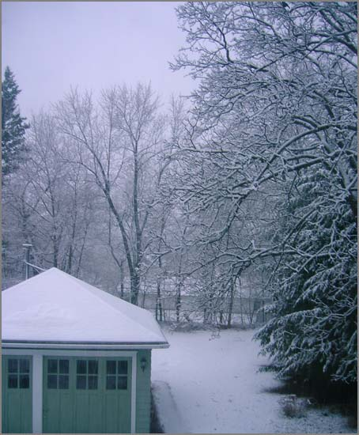
</div>
</div>

<div class="posted">
<br />Posted by <span class="item-creator">Kurt</span>
| <a class="link" href="2008-03.html#e2008-03-28T07_17_22.txt">Permalink</a>

<!-- <br /><a href="archives/2008-03-30T20_03_04.html#comments">Comments</a> -->
</div>
</div>
<div class="item">
<a id="e2008-03-27T10_17_04.txt" name="e2008-03-27T10_17_04.txt"></a>
<h2 class="date">03.27.2008 10:17</h2>
<div class="blogbody">
<h3 class="title">AIS AtoN Stations</h3>
<div class="item-description">
A new IEC document is out today:
<br /><br />
<a href="http://webstore.iec.ch/Webstore/webstore.nsf/0/D9549F0C2184256AC12574190010BD83">IEC 62320-2:2008(E)</a>
<pre>
Maritime navigation and radiocommunication equipment and systems -
Automatic identification system (AIS) - Part 2: AIS AtoN Stations -
Operational and performance requirements, methods of testing and
required test results
.
IEC 62320-2:2008(E) specifies the operational and performance
requirements, methods of testing and required test results for AIS
AtoN Stations compatible with the performance standards adopted by IMO
Res. MSC.74(69), annex 3, Universal AIS. Incorporates the technical
characteristics of non-shipborne AIS AtoN equipment, included in the
relevant ITU-R and IALA Recommendations. Also takes into account the
ITU Radio Regulations, where applicable.
</pre>
</div>
</div>

<div class="posted">
<br />Posted by <span class="item-creator">Kurt</span>
| <a class="link" href="2008-03.html#e2008-03-27T10_17_04.txt">Permalink</a>

<!-- <br /><a href="archives/2008-03-28T07_17_22.html#comments">Comments</a> -->
</div>
</div>
<div class="item">
<a id="e2008-03-26T20_17_48.txt" name="e2008-03-26T20_17_48.txt"></a>
<h2 class="date">03.26.2008 20:17</h2>
<div class="blogbody">
<h3 class="title">St. Lawrence Island Formerly Used Defense Sites (FUDS) cleanup report</h3>
<div class="item-description">
The ACOE was kind enough to send us a copy of the FUDS cleanup report.
The report covers cleanup on land, but it has information that is
helpful for planning incident response in the future should there be
something that happens on the shores of the island.  The report weighs
in at a hefty 2093 pages.  In the report, there is an extensive paper
trail for the disposal of the material removed from the island.
<br /><br />
<center>
U.S. Army Corps of Engineers, Alaska District<br/>
White Alice Tram and Debris Removal<br/>
Northeast Cape, St. Lawrence Island, Alaska<br/>
Contract No. W911KB-04-C-0019<br/>
FUDS Property No. F10AK096901<br/>
F10AK096901_07.08_0001_a.pdf and<br/>
F10AK096903_07.08_0001_a.pdf<br/>
REMOVAL ACTION REPORT<br/>
FINAL<br/>
September 2006<br/>
</center>
<br /><br />
From the executive summary.
<ul>The scope of cleanup work for the 2005 season included:
  <li>Preparing planning documents and reports;</li>
  <li>Mobilizing and demobilizing;</li>
  <li>Providing and improving access to the work sites;</li>
  <li>Removing tram towers and associated cables and wires;</li>
  <li>Conducting surveying, sampling, and analysis;</li>
  <li>Removing drums and miscellaneous items and debris;</li>
  <li>Removing contaminated soil and concrete;</li>
  <li>Removing a water collector and water line;</li>
  <li>Removing former power and communications poles and wires; and</li>
  <li>Reseeding disturbed areas.
</ul>
As a geologist, it is great to see that they have a section on the 
site geology.
<pre>
St. Lawrence Island consists of isolated bedrock highlands of igneous
and older sedimentary rocks, surrounded by unconsolidated surficial
deposits, overlying a relatively shallow erosional bedrock surface. In
the immediate vicinity of the lower mountain area, shallow
unconsolidated surficial materials overlie quartz monzonitic rocks of
the Kinipaghulghat Pluton. The pluton forms the mountainous work area
south of the AFS Ops Area, including Kangukhsam Mountain. The
Suqitughneq River drainage at the work area in the Kinipaghulghat
Pluton has created an erosional valley and alluvial fan of
unconsolidated sediments. Granitic bedrock materials are exposed at
the coast, north of the site at Kitnagak Bay, suggesting that quartz
monzonitic bedrock underlies the unconsolidated materials at a
relatively shallow depth on a wave-cut erosional platform.
...
</pre>
<br /><br />
After unloading the cleanup equipment via the beach:
<br /><br />
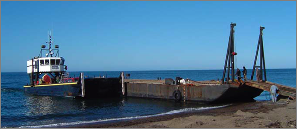
<br /><br />
The site map for the former base:
<br /><br />
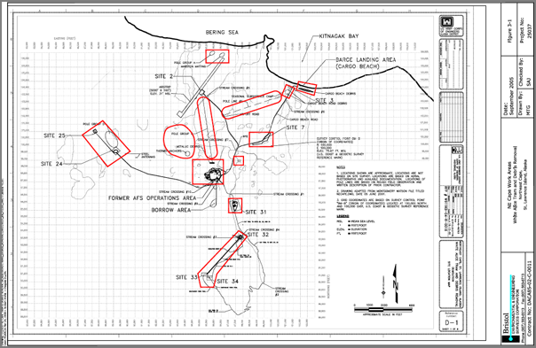
</div>
</div>

<div class="posted">
<br />Posted by <span class="item-creator">Kurt</span>
| <a class="link" href="2008-03.html#e2008-03-26T20_17_48.txt">Permalink</a>

<!-- <br /><a href="archives/2008-03-27T10_17_04.html#comments">Comments</a> -->
</div>
</div>
<div class="item">
<a id="e2008-03-25T09_52_01.txt" name="e2008-03-25T09_52_01.txt"></a>
<h2 class="date">03.25.2008 09:52</h2>
<div class="blogbody">
<h3 class="title">SBNMS cruise</h3>
<div class="item-description">
Yesterday was my first day in the SBNMS and my first time on the NOAA
vessel R/V Auk.  It was a great day to be at sea!
<br /><br />
Here is the R/V Auk at is was heading back to its berth at the end of the day.
<br /><br />
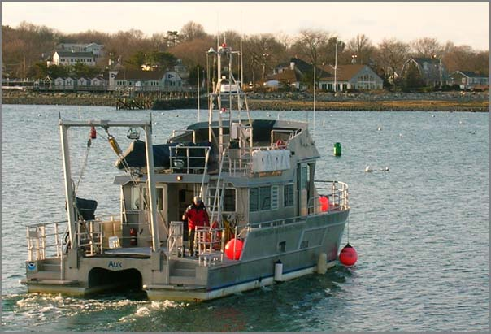
<br /><br />
Here is the bridge:
<br /><br />
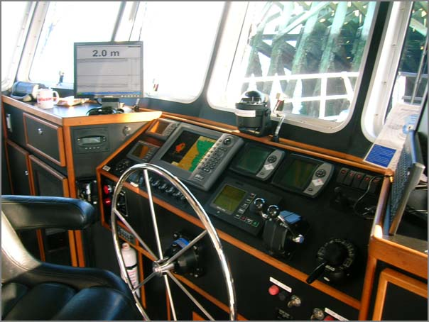
<br /><br />
Mike and I setup AIS logging with a second small whip antenna.
<br /><br />
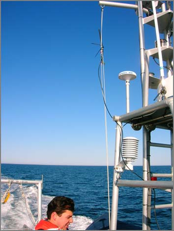
<br /><br />
Logging was done with an SR162-G with a mac laptop sitting in the
corner.  This is okay for a one off, but I am definitely doing logging
from inside next time.
<br /><br />
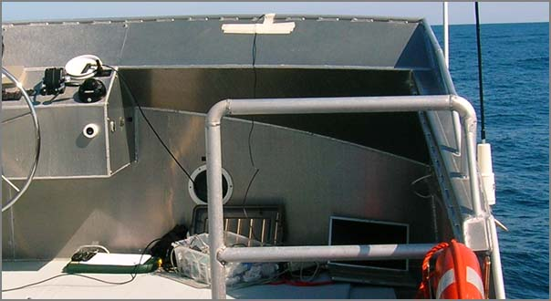
<br /><br />
Among the many tasks of the day, we did a visual inspection of
auto-buoy 4 (aka AB-4).  This is one of the buoys that detects right
whale calls and sends them back to Cornell.
<br /><br />
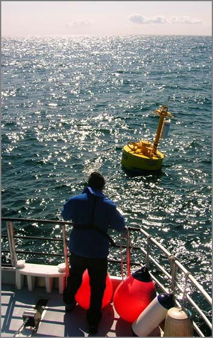
<br /><br />
In this image, Highland Light is just visible next to the FAA radar dome.
<br /><br />
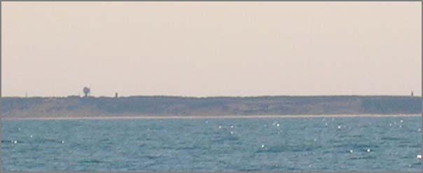
<br /><br />
And we saw other vessels out and about.
<br /><br />
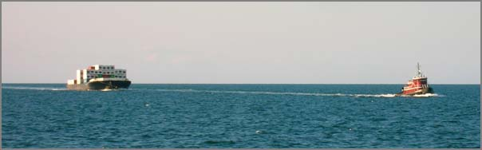
</div>
</div>

<div class="posted">
<br />Posted by <span class="item-creator">Kurt</span>
| <a class="link" href="2008-03.html#e2008-03-25T09_52_01.txt">Permalink</a>

<!-- <br /><a href="archives/2008-03-26T20_17_48.html#comments">Comments</a> -->
</div>
</div>
<div class="item">
<a id="e2008-03-20T14_46_45.txt" name="e2008-03-20T14_46_45.txt"></a>
<h2 class="date">03.20.2008 14:46</h2>
<div class="blogbody">
<h3 class="title">GeoGarage NOAA charts</h3>
<div class="item-description">
loic just sent me a link to the NOAA BSB Raster Nautical Charts all
online through <a
href="http://www.geogarage.com/main/examples.html.en#noaa">GeoGarage</a>
<br /><br />
You can even pass around a URL with a location:
<a href="http://demo.geogarage.com/noaa/?lat=63.338883756031954&lon=-168.90106201171875&zoom=11">St Lawrence Island</a>
<br /><br />
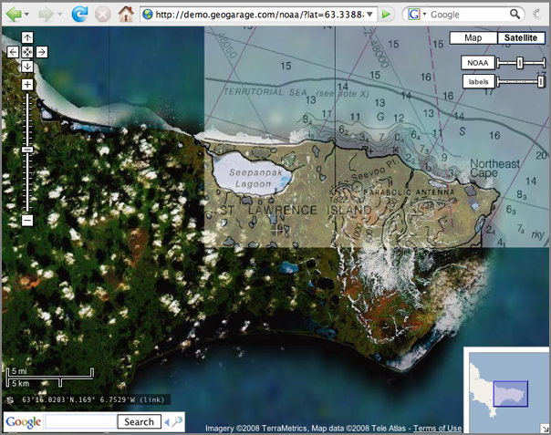
</div>
</div>

<div class="posted">
<br />Posted by <span class="item-creator">Kurt</span>
| <a class="link" href="2008-03.html#e2008-03-20T14_46_45.txt">Permalink</a>

<!-- <br /><a href="archives/2008-03-25T09_52_01.html#comments">Comments</a> -->
</div>
</div>
<div class="item">
<a id="e2008-03-20T12_14_17.txt" name="e2008-03-20T12_14_17.txt"></a>
<h2 class="date">03.20.2008 12:14</h2>
<div class="blogbody">
<h3 class="title">Michelle's blog - Portsmouth Harbour Project</h3>
<div class="item-description">
Michelle has a great blog about work on her thesis.  I had the wrong
address for where she has been adding articles.
<br /><br />
<a href="http://pharbour.wordpress.com/">Portsmouth Harbour
Project</a> "a.k.a. last semester of Michelle's masters thesis"
<br /><br />
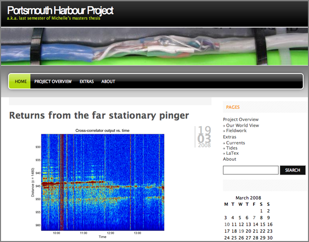
</div>
</div>

<div class="posted">
<br />Posted by <span class="item-creator">Kurt</span>
| <a class="link" href="2008-03.html#e2008-03-20T12_14_17.txt">Permalink</a>

<!-- <br /><a href="archives/2008-03-20T14_46_45.html#comments">Comments</a> -->
</div>
</div>
<div class="item">
<a id="e2008-03-20T10_48_18.txt" name="e2008-03-20T10_48_18.txt"></a>
<h2 class="date">03.20.2008 10:48</h2>
<div class="blogbody">
<h3 class="title">St Lawrence Island chart and incident map</h3>
<div class="item-description">
Here is the Google Earth location file for the group that I participated in.
<br /><br />
<a href="../attachments/2008-03/sli-ArcticResponseGroupE.kmz">sli-ArcticResponseGroupE.kmz</a>
<br /><br />
The map shows the incident vessel in red.  Green shows the 115 nm route 
from Noam to the site.xs
<br /><br />
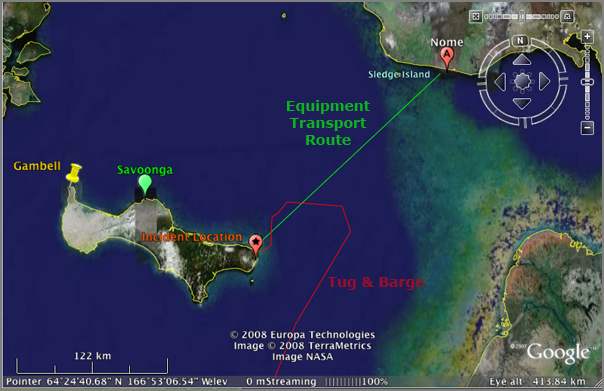
<br /><br />
The nautical chart issue came up today.
<br /><br />
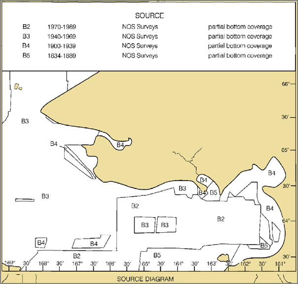
<br /><br />
Brian C. pointed out that I should look at the source diagram.  I
should have thought about that myself.  The island is in B3, which is
"1940-1969."  I am guessing that the chart is probably in the 1950's
along with the installation of a <a
href="http://en.wikipedia.org/wiki/White_Alice">White Alice</a> on the
island at Northeast Cape in 1958.  See <a href="http://en.wikipedia.org/wiki/List_of_White_Alice_Communications_System_sites">List of White Alice Communication System sites</a> [wikipedia]
<br /><br />
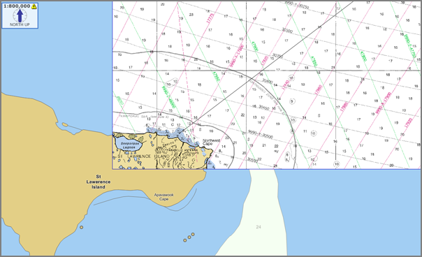
</div>
</div>

<div class="posted">
<br />Posted by <span class="item-creator">Kurt</span>
| <a class="link" href="2008-03.html#e2008-03-20T10_48_18.txt">Permalink</a>

<!-- <br /><a href="archives/2008-03-20T12_14_17.html#comments">Comments</a> -->
</div>
</div>
<div class="item">
<a id="e2008-03-20T09_15_31.txt" name="e2008-03-20T09_15_31.txt"></a>
<h2 class="date">03.20.2008 09:15</h2>
<div class="blogbody">
<h3 class="title">Photos of the Alaska Coastline</h3>
<div class="item-description">
There is a <a href="http://www.coastalaska.net/flyAlaska.htm">Fly
Alaska</a> site that has an ArcIMS interface to flown photos.  Not as
easy to use as <a
href="http://www.californiacoastline.org/">California Coastline</a>, but
still great.
<br /><br />
There are a ton of layers.  I tried looking at Kodiak.
<br /><br />
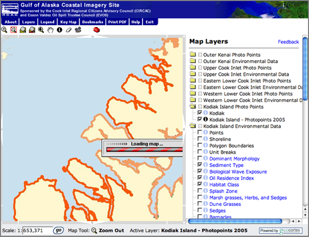
<br /><br />
Thy've got the standard legends, but I've got too many things
overwriting each other.
<br /><br />
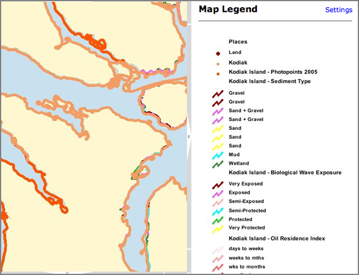
<br /><br />
I managed to get images to show through clicking on the animation
tool, but I don't know how to click on a location and get the images.
<br /><br />
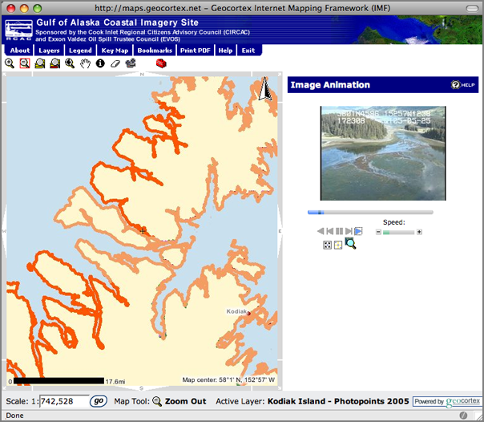
</div>
</div>

<div class="posted">
<br />Posted by <span class="item-creator">Kurt</span>
| <a class="link" href="2008-03.html#e2008-03-20T09_15_31.txt">Permalink</a>

<!-- <br /><a href="archives/2008-03-20T10_48_18.html#comments">Comments</a> -->
</div>
</div>
<div class="item">
<a id="e2008-03-20T07_45_12.txt" name="e2008-03-20T07_45_12.txt"></a>
<h2 class="date">03.20.2008 07:45</h2>
<div class="blogbody">
<h3 class="title">L-3 Klein Side Scan seminar</h3>
<div class="item-description">
<a href="http://www.hydro-international.com/news/id2347-Side_Scan_Sonar_Operations_and_Maintenance_Seminar.html">Side Scan Sonar Operations and Maintenance Seminar</a> [hydro-international]
<pre>
L-3 Klein Associates announce a Side Scan Sonar Operations and
Maintenance Training Seminar from 29 April to 1 May 2008. The three
day seminar will be conducted at L-3 Klein's Facility in Salem (NH,
USA). The training will include 2 days of classroom instruction and 1
day of on the water training; lunch will be provided daily.
...
</pre>
I didn't see any pricing information and I don't see this on the <a
href="http://www.l-3klein.com/">Klein web page</a>.
</div>
</div>

<div class="posted">
<br />Posted by <span class="item-creator">Kurt</span>
| <a class="link" href="2008-03.html#e2008-03-20T07_45_12.txt">Permalink</a>

<!-- <br /><a href="archives/2008-03-20T09_15_31.html#comments">Comments</a> -->
</div>
</div>
<div class="item">
<a id="e2008-03-20T06_14_50.txt" name="e2008-03-20T06_14_50.txt"></a>
<h2 class="date">03.20.2008 06:14</h2>
<div class="blogbody">
<h3 class="title">Portsmouth Naval Shipyard sonar testing facility</h3>
<div class="item-description">
<a href="http://www.seacoastonline.com/apps/pbcs.dll/article?AID=/20080320/NEWS/803200407/-1/rss01">Shipyard building new test facility</a>
<pre>
KITTERY, Maine - The Portsmouth Naval Shipyard broke ground Wednesday
on a $7.4 million sonar microphone testing facility that the Navy
didn't request.
.
Shipyard officials were joined by Kittery Town Manager Jonathan Carter
for the ceremony preceding construction of the Transducer Test and
Calibration Facility. Also in attendance were representatives of
members of the Maine and New Hampshire congressional delegations, who
raised all the money through congressional earmarks.
.
"The Transducer Test and Calibration Facility project was a MILCON
(military construction) project inserted into the Navy's MILCON
program by a congressional add-on," shipyard spokeswoman Deborah White
confirmed.
...
</pre>
</div>
</div>

<div class="posted">
<br />Posted by <span class="item-creator">Kurt</span>
| <a class="link" href="2008-03.html#e2008-03-20T06_14_50.txt">Permalink</a>

<!-- <br /><a href="archives/2008-03-20T07_45_12.html#comments">Comments</a> -->
</div>
</div>
<div class="item">
<a id="e2008-03-19T09_12_22.txt" name="e2008-03-19T09_12_22.txt"></a>
<h2 class="date">03.19.2008 09:12</h2>
<div class="blogbody">
<h3 class="title">AMVER vessel position reports</h3>
<div class="item-description">
Somehow, I have have not blogged about <a
href="http://www.amver.com/">AMVER</a> before.
<pre>
Amver, sponsored by the United States Coast Guard, is a unique,
computer-based, and voluntary global ship reporting system used
worldwide by search and rescue authorities to arrange for assistance
to persons in distress at sea.With Amver, rescue coordinators can
identify participating ships in the area of distress and divert the
best-suited ship or ships to respond.
.
Amver's mission is to quickly provide search and rescue authorities,
on demand, accurate information on the positions and characteristics
of vessels near a reported distress.
...
This report should be sent within 24 hours of departing port and at
least once every 48 hours thereafter. The destination should be
included (at least in the first few reports) in case Amver has not
received the Sailing Plan information. Position Reports require A, B,
C, E, F, and Z lines. The I line is strongly recommended. The M, X,
and Y lines are optional. (The Y line is required for U.S. vessels.)
</pre>
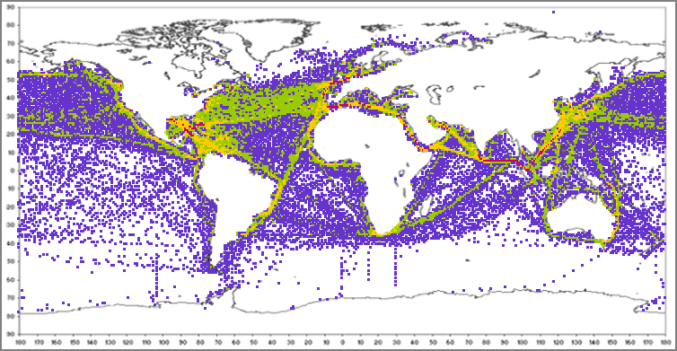
</div>
</div>

<div class="posted">
<br />Posted by <span class="item-creator">Kurt</span>
| <a class="link" href="2008-03.html#e2008-03-19T09_12_22.txt">Permalink</a>

<!-- <br /><a href="archives/2008-03-20T06_14_50.html#comments">Comments</a> -->
</div>
</div>
<div class="item">
<a id="e2008-03-19T08_55_14.txt" name="e2008-03-19T08_55_14.txt"></a>
<h2 class="date">03.19.2008 08:55</h2>
<div class="blogbody">
<h3 class="title">Ice Coverage</h3>
<div class="item-description">
To go along with yesterday's images for the St. Lawrence Island, here
is the ice coverage from <a
href="http://ak.aoos.org/whats_new.html">http://ak.aoos.org/whats_new.html</a>
<br /><br />
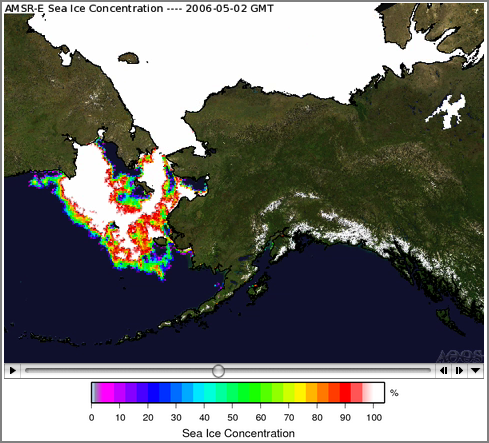
</div>
</div>

<div class="posted">
<br />Posted by <span class="item-creator">Kurt</span>
| <a class="link" href="2008-03.html#e2008-03-19T08_55_14.txt">Permalink</a>

<!-- <br /><a href="archives/2008-03-19T09_12_22.html#comments">Comments</a> -->
</div>
</div>
<div class="item">
<a id="e2008-03-18T21_05_35.txt" name="e2008-03-18T21_05_35.txt"></a>
<h2 class="date">03.18.2008 21:05</h2>
<div class="blogbody">
<h3 class="title">Windows XP slipstreaming</h3>
<div class="item-description">
Having been away from Windows for a long time, the term
<em>slipstreaming</em> is a new one to me.  <a
href="http://www.winsupersite.com/showcase/windowsxp_sp2_slipstream.asp">Slipstreaming
Windows XP with Service Pack 2 (SP2)</a> [winsupersite]
<pre>
...
But what, exactly, is slipstreaming, you ask? Back when Microsoft was
developing Windows 2000, the company decided to create up a more
elegant way of integrating service packs and other fixes back into the
core OS, so that enterprise customers could always maintain an install
set of the latest version of Windows, ready to be installed at any
time on new machines.
...
For end users, slipstreaming can also be useful. For example, you can
copy the installation directory from your XP CD-ROM to the hard drive,
slipstream the XP SP2 files into that installation directory, and than
write it back to a recordable CD, giving you a bootable copy of the XP
setup disk that includes SP2 right out of the box (so to
speak). That's the process we're going to examine here. And
slipstreaming isn't limited to service packs, either: You can also
slipstream in various product updates, including hot-fixes. Previous
to the release of SP2, I created a bootable XP CD that included the
original "gold" version of XP, Service Pack 1a, and the Security
Rollup 1 update, all meshed together into a single install. Now, I've
tossed that CD aside for one that includes XP SP2 instead.
...
</pre>
When I talked to Brian C. today about how I'd like to have a cloned
mediawiki to go to sea with, he mentioned including apache2, mediawiki,
and a copy of the db all go into a dvd when the windows installed is
slipstreamed.  Sounds good to me.  Now I need to get back to adding 
content to our intranet wiki.
</div>
</div>

<div class="posted">
<br />Posted by <span class="item-creator">Kurt</span>
| <a class="link" href="2008-03.html#e2008-03-18T21_05_35.txt">Permalink</a>

<!-- <br /><a href="archives/2008-03-19T08_55_14.html#comments">Comments</a> -->
</div>
</div>
<div class="item">
<a id="e2008-03-18T13_21_06.txt" name="e2008-03-18T13_21_06.txt"></a>
<h2 class="date">03.18.2008 13:21</h2>
<div class="blogbody">
<h3 class="title">Arctic Response - St Lawrence Island</h3>
<div class="item-description">
For the arctic reponsonse workshop, my group is looking at what if something
happened at St. Lawrence Island, Alaska.
<br /><br />
Wikipedia has a quick summary of the island: <a href="http://en.wikipedia.org/wiki/St._Lawrence_Island">St. Lawrence Island</a>
<br /><br />
First, where is it?  It's 115 nm SW of Noam Alaska.  Google Earth is a way
to get a quick look.
<br /><br />
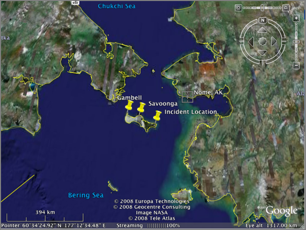
<br /><br />
The site is on North Cape.  This is the sight on an old Air Force base
that is crumbling.  On this old topo map, the site is near the Lietnik
Landing Area.
<br /><br />
<a href="http://www.lib.utexas.edu/maps/topo/250k/txu-pclmaps-topo-us-saint_lawrence-1970.jpg">txu-pclmaps-topo-us-saint_lawrence-1970.jpg</a> [utexas.edu]
<br /><br />
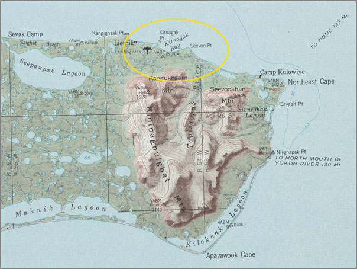
<br /><br />
Here is what the military site looks like.  <a href="http://commons.wikimedia.org/wiki/Image:White_Alice_site_St_Lawrence_Island.jpg">Image:White_Alice_site_St_Lawrence_Island.jpg</a> [wikimedia]
<br /><br />
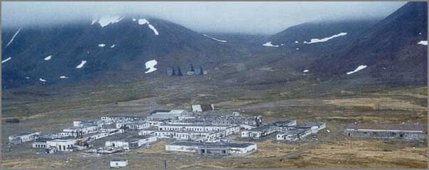
<br /><br />
On the RNC, the parabolic dish is the marker for that base.  The
Raster Nautical Chart (RNC) has much more info than the Electronic
Navigation Chart.  Of note, NOAA ORR has yet to complete the shoreline
sensitivity mapping.
<br /><br />
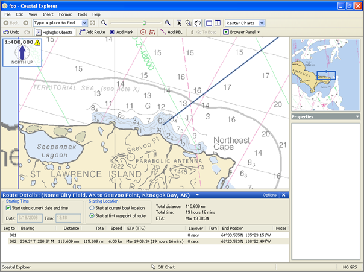
<br /><br />
I tried looking for multibeam data.  I only found single beam tracks with GeoMapApp.
<br /><br />
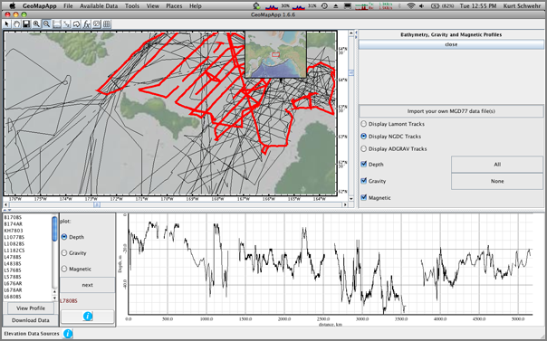
<br /><br />
Where are the nearest NOAA survey vessels? NOAA has a <a href="http://shiptracker.noaa.gov/">shiptracker</a>
<br /><br />
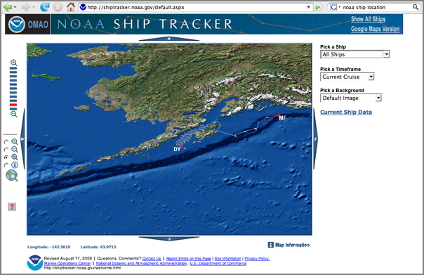
<br /><br />
Dale C. pointed me to the most recent location of the USCG Ice Breaker Healy:
<a href="http://www.sailwx.info/shiptrack/shipposition.phtml?call=NEPP">NEPP location</a> [sailwx]
<br /><br />
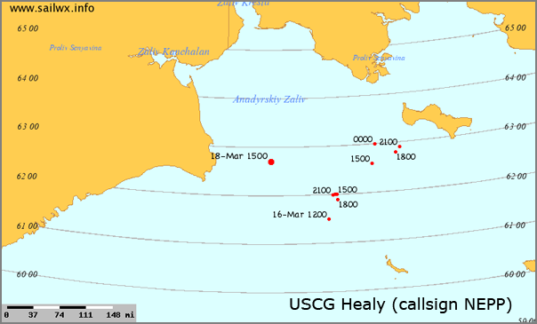
</div>
</div>

<div class="posted">
<br />Posted by <span class="item-creator">Kurt</span>
| <a class="link" href="2008-03.html#e2008-03-18T13_21_06.txt">Permalink</a>

<!-- <br /><a href="archives/2008-03-18T21_05_35.html#comments">Comments</a> -->
</div>
</div>
<div class="item">
<a id="e2008-03-18T08_16_45.txt" name="e2008-03-18T08_16_45.txt"></a>
<h2 class="date">03.18.2008 08:16</h2>
<div class="blogbody">
<h3 class="title">Arctic response workshop</h3>
<div class="item-description">
For the next three days, I am at a workshop: <a
href="http://www.crrc.unh.edu/workshops/arctic_spill_summit/index.htm">Opening
the Arctic Seas: Envisioning Disaster &amp; Framing Solutions</a>
<br /><br />
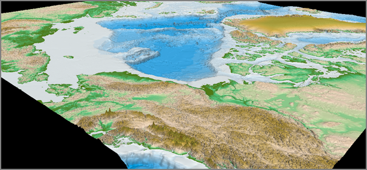
</div>
</div>

<div class="posted">
<br />Posted by <span class="item-creator">Kurt</span>
| <a class="link" href="2008-03.html#e2008-03-18T08_16_45.txt">Permalink</a>

<!-- <br /><a href="archives/2008-03-18T13_21_06.html#comments">Comments</a> -->
</div>
</div>
<div class="item">
<a id="e2008-03-18T06_24_35.txt" name="e2008-03-18T06_24_35.txt"></a>
<h2 class="date">03.18.2008 06:24</h2>
<div class="blogbody">
<h3 class="title">Capt. Joe sinks but AIS assists with the rescue</h3>
<div class="item-description">
AIS was initially designed for Safety Of Life At Sea (SOLAS) use of
AIS... here is a nice use of AIS towards that goal, which was not
initially intended.
<br /><br />
<a href="http://www.panbo.com/archives/2008/03/capt_joe_crew_rescued_ais_helped.html">Capt. Joe crew rescued, AIS helped</a>
<pre>
...
According to APP.com, "The fishermen had an 'automated identification
system transponder' aboard their boat. While that transponder system
sunk with the Captain Joe, the signals it gave out before the vessel
went down helped the rescue crews find the boat's last position."
...
Just last week I learned that Class B AIS isn't even on the FCC's
March 19 agenda, meaning that this Capt. Joe type rescue aid remains
unavailable for most boaters. (However, I also heard that at least one
commissioner has already signed the ruling-a meeting isn't even
necessary-so maybe this FCC travesty will actually end soon.)
...
</pre>
<br /><br />
<a href="http://www.uscg.mil/cgjournal/message.asp?Id=59">The Seas Were Angry</a> [uscg cgjournal]
<pre>
On the night of March 12th, we were coming back from a routine hoist
training session with small boat station Indian River, Del. when we
got the call to refuel at Air Station Atlantic City and proceed to
search for a possible life raft with 4 people on board near Manasquan
Inlet, N.J.
...
</pre>
<br /><br />
I wonder how the Orbcomm AIS receive satellite will do?  Would be
great to have LEO satellite coverage for the Arctic and middle of the
oceans sometime in the distant future.
</div>
</div>

<div class="posted">
<br />Posted by <span class="item-creator">Kurt</span>
| <a class="link" href="2008-03.html#e2008-03-18T06_24_35.txt">Permalink</a>

<!-- <br /><a href="archives/2008-03-18T08_16_45.html#comments">Comments</a> -->
</div>
</div>
<div class="item">
<a id="e2008-03-17T19_50_10.txt" name="e2008-03-17T19_50_10.txt"></a>
<h2 class="date">03.17.2008 19:50</h2>
<div class="blogbody">
<h3 class="title">Another lighthouse visit</h3>
<div class="item-description">
Today, three of us went out to Cape Cod to check out the <a
href="http://lighthouse.cc/highland/index.html">Hightland
Lighthouse</a>.  This is a really pretty location, but a heck of a drive
for me.
<br /><br />

<br /><br />
I went out this door onto the lower cat walk.  Whew!  I am definitely not
interested in going up on the top catwalk.  
<br /><br />
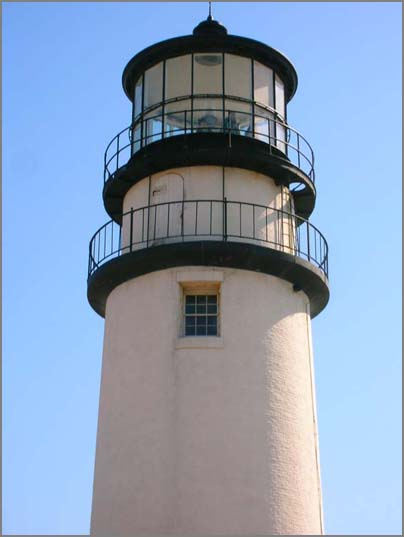
<br /><br />
We ran some tests in the room below the light and received 0 AIS messages.
<br /><br />
<pre>
$GPRMC,141009.00,A,4202.3469,N,07003.7240,W,0.00,0.0,170308,15.4,W,A*3C,rmahghlndlght,1205763008.81
</pre>
<br /><br />
One great feature of this site is that it can directly see the cell
tower by the town safety building.  Line-of-sight gives a strong EVDO
signal.
<br /><br />
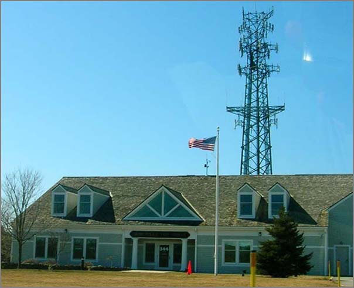
<br /><br />
I had a chance to meet the crew over at the FAA radar too.  Nice folks
and a very pretty location.
<br /><br />
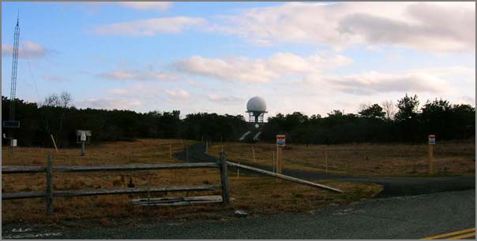
<br /><br />
Here is a shot across the old Air Force base that is in the process of
being reworked as an art facility.  I very nice (but cold and windy) place
for a walk out to the bluff.
<br /><br />
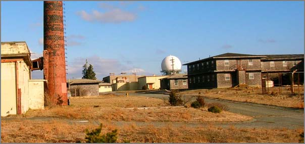
<br /><br />
I got my first chance to get into P-Town.  Note: I did not fiddle with
the water colors.  I didn't make it too far before the wind blown sand
blasted me and I retreated to the car.
<br /><br />

<br /><br />
Thanks to all who participated for a great trip.
</div>
</div>

<div class="posted">
<br />Posted by <span class="item-creator">Kurt</span>
| <a class="link" href="2008-03.html#e2008-03-17T19_50_10.txt">Permalink</a>

<!-- <br /><a href="archives/2008-03-18T06_24_35.html#comments">Comments</a> -->
</div>
</div>
<div class="item">
<a id="e2008-03-14T14_00_02.txt" name="e2008-03-14T14_00_02.txt"></a>
<h2 class="date">03.14.2008 14:00</h2>
<div class="blogbody">
<h3 class="title">A new blog by a CCOM person - Sediment Mobility</h3>
<div class="item-description">
Janice was kind enough to point me to her new blog about her thesis work:
<br /><br />
Sediment Mobility in Portsmouth Harbor, a.k.a. progress of janice's M.S. thesis
<br /><br />
<a href="http://phseds.wordpress.com/">http://phseds.wordpress.com/</a>
<br /><br />
Make sure to check out the <a href="http://phseds.wordpress.com/about/">About</a> and <a href="http://phseds.wordpress.com/project-overview/">Project Overview</a> tabs.
<br /><br />
<a href="http://phseds.wordpress.com/feed/">The RSS Feed</a>
<br /><br />
Go Janice!
<br /><br />
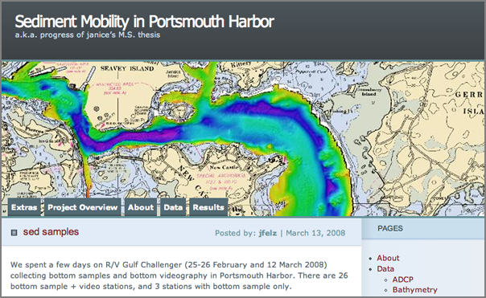
</div>
</div>

<div class="posted">
<br />Posted by <span class="item-creator">Kurt</span>
| <a class="link" href="2008-03.html#e2008-03-14T14_00_02.txt">Permalink</a>

<!-- <br /><a href="archives/2008-03-17T19_50_10.html#comments">Comments</a> -->
</div>
</div>
<div class="item">
<a id="e2008-03-14T13_15_24.txt" name="e2008-03-14T13_15_24.txt"></a>
<h2 class="date">03.14.2008 13:15</h2>
<div class="blogbody">
<h3 class="title">pypi entry for noaadata fixed</h3>
<div class="item-description">
Thanks to Joe Healy for pointing out that I really messed up the URLs for noaadata in the setup.py.  The new setup.py will come out with 0.37 sometime in the next couple weeks, but the enty on pypi is now correct:
<br /><br />
For the specific version: <a href="http://pypi.python.org/pypi/noaadata-py/0.36">noaadata-py/0.36</a>
<br /><br />
General noaadata entry: <a href="http://pypi.python.org/pypi/noaadata-py/">noaadata-py</a>
</div>
</div>

<div class="posted">
<br />Posted by <span class="item-creator">Kurt</span>
| <a class="link" href="2008-03.html#e2008-03-14T13_15_24.txt">Permalink</a>

<!-- <br /><a href="archives/2008-03-14T14_00_02.html#comments">Comments</a> -->
</div>
</div>
<div class="item">
<a id="e2008-03-13T17_15_12.txt" name="e2008-03-13T17_15_12.txt"></a>
<h2 class="date">03.13.2008 17:15</h2>
<div class="blogbody">
<h3 class="title">Mac OSX 10.4 and newer has access control lists (ACL)</h3>
<div class="item-description">
Back when my home account lived on AFS, I lived by ACLs for group
projects and drop boxes.  I am very excited to see that we now have
ACL's on the Mac.  Solaris got ACL's at some point and I ran into ACLs
while working on the Mars Exploration Rovers with the NASA Ames'
Collaborative Information Portal (CIP; [<a
href="http://ti.arc.nasa.gov/publications/pdf/0649.pdf">PDF</a>])
team.  ACLs let me dig deep into the engineering flight systems to
pull time critical data without fear of accidentally doing anything
to the files.  
<br /><br />
<a href="http://www.afp548.com/article.php?story=20050506085817850">Grokking Darwin ACLs</a> [AFP548] or
<pre>
% man fsaclctl
% man chmod
</pre>
</div>
</div>

<div class="posted">
<br />Posted by <span class="item-creator">Kurt</span>
| <a class="link" href="2008-03.html#e2008-03-13T17_15_12.txt">Permalink</a>

<!-- <br /><a href="archives/2008-03-14T13_15_24.html#comments">Comments</a> -->
</div>
</div>
<div class="item">
<a id="e2008-03-13T10_51_02.txt" name="e2008-03-13T10_51_02.txt"></a>
<h2 class="date">03.13.2008 10:51</h2>
<div class="blogbody">
<h3 class="title">ESRI ArcGIS 9.3 Beta</h3>
<div class="item-description">
<a href="http://mandown.co.nz/esri/esri-releases-arcgis-9-3-beta/">ESRI Releases ArcGIS 9.3 Beta</a>
<pre>
It's now official, ESRI has released ArcGIS 9.3 beta to participants
in the beta program. We have been actively working with the ESRI
development teams on testing ArcGIS 9.3 and this has been great. We
already have done some pretty cool stuff and submitted some great
feedback. ESRI is really looking forward to beta testers feeding back
bugs and other comments on the latest release.
...
</pre>
I was hoping to test out the PostgreSQL/PostGIS integration, but have not
heard back from my ESRI POC.
</div>
</div>

<div class="posted">
<br />Posted by <span class="item-creator">Kurt</span>
| <a class="link" href="2008-03.html#e2008-03-13T10_51_02.txt">Permalink</a>

<!-- <br /><a href="archives/2008-03-13T17_15_12.html#comments">Comments</a> -->
</div>
</div>
<div class="item">
<a id="e2008-03-12T19_23_37.txt" name="e2008-03-12T19_23_37.txt"></a>
<h2 class="date">03.12.2008 19:23</h2>
<div class="blogbody">
<h3 class="title">UNH GreenHouse Open House March 29th</h3>
<div class="item-description">
Last year, a bunch of us headed over the to UNH Greenhouses for this
event.  It's free and fun after a long winter.
<br /><br />
<a href="http://extension.unh.edu/news/2008/03/spring_bring_it_on.html">Spring? Bring it on!</a> [UNH Extension] - March 29th 9-4.
<br /><br />
Last year:
<br /><br />
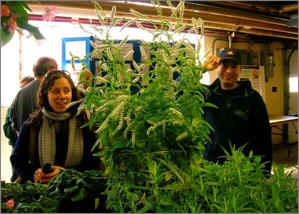
</div>
</div>

<div class="posted">
<br />Posted by <span class="item-creator">Kurt</span>
| <a class="link" href="2008-03.html#e2008-03-12T19_23_37.txt">Permalink</a>

<!-- <br /><a href="archives/2008-03-13T10_51_02.html#comments">Comments</a> -->
</div>
</div>
<div class="item">
<a id="e2008-03-12T19_12_16.txt" name="e2008-03-12T19_12_16.txt"></a>
<h2 class="date">03.12.2008 19:12</h2>
<div class="blogbody">
<h3 class="title">Talk for the local Order of the Arrow Lodge</h3>
<div class="item-description">
Last night I had fun giving a talk to the local Boy Scouts Order of
the Arrow lodge.  They were a great audience.  I talked about what
it is like to have a career in "ocean mapping."  
<br /><br />
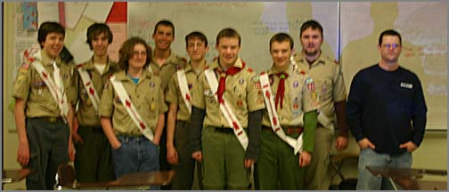
<br /><br />
The problem talking about ocean mapping is that each person has their
own set of experiences.  For example, after the first time I demobbed
a team, I was really nervous about the next time.  Then it turned out
that "Lil' Toot" came out of the Santa Barbara harbor for crew change.
Lots different than a night tug transfer in swells. 
<br /><br />
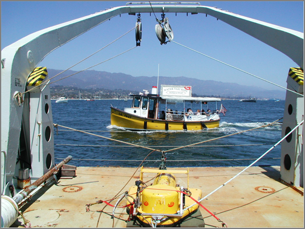
</div>
</div>

<div class="posted">
<br />Posted by <span class="item-creator">Kurt</span>
| <a class="link" href="2008-03.html#e2008-03-12T19_12_16.txt">Permalink</a>

<!-- <br /><a href="archives/2008-03-12T19_23_37.html#comments">Comments</a> -->
</div>
</div>
<div class="item">
<a id="e2008-03-12T16_36_51.txt" name="e2008-03-12T16_36_51.txt"></a>
<h2 class="date">03.12.2008 16:36</h2>
<div class="blogbody">
<h3 class="title">Eastern Point Light visit</h3>
<div class="item-description">
Today, a couple of us made a visit to Eastern Point Light out at the
end of Cape Ann.  This is a really nice location.  It was rainy and
windy, but on a nice summer day, the would be a place to hang out.
<br /><br />
The building:
<br /><br />
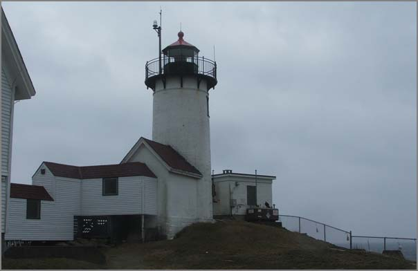
<br /><br />
We did a quick mounting of a standard marine AIS antenna to see what
it might look like.  
<br /><br />

<br /><br />
We then setup an SR162g to see what we could get in a few minutes of
logging.
<br /><br />
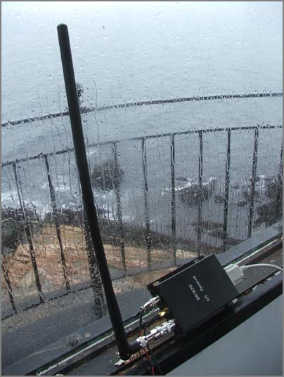
<br /><br />
I managed to get a bunch of data logged for analysis.
<br /><br />
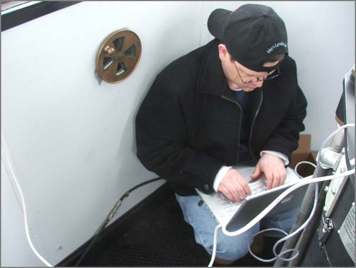
<br /><br />
Images are courtesy Mike Thompson.
</div>
</div>

<div class="posted">
<br />Posted by <span class="item-creator">Kurt</span>
| <a class="link" href="2008-03.html#e2008-03-12T16_36_51.txt">Permalink</a>

<!-- <br /><a href="archives/2008-03-12T19_12_16.html#comments">Comments</a> -->
</div>
</div>
<div class="item">
<a id="e2008-03-11T09_58_24.txt" name="e2008-03-11T09_58_24.txt"></a>
<h2 class="date">03.11.2008 09:58</h2>
<div class="blogbody">
<h3 class="title">Army's Future Combat System (FCS)</h3>
<div class="item-description">
Wired: <a href="http://blog.wired.com/defense/2008/03/post.html">Army's $200 Billion Reboot Fizzles; Murtha Wants $20 Billion More</a>
<pre>
The Army's gargantuan digital modernization plan has turned so rotten,
a new congressional report says it's time to start thinking about
killing off the effort, and looking for new alternatives. Rep. John
Murtha (D-Pennsylvania), the powerful head of the House Appropriations
defense subcommittee, has another plan: Pump another $20 billion into
the sickly, $200 billion behemoth "Future Combat Systems" before it
drops dead under its own weight.
...
</pre>
Image from the US Army: <a href="https://www.fcs.army.mil/images/systems/large/network.jpg">FCS Network</a>
<br /><br />
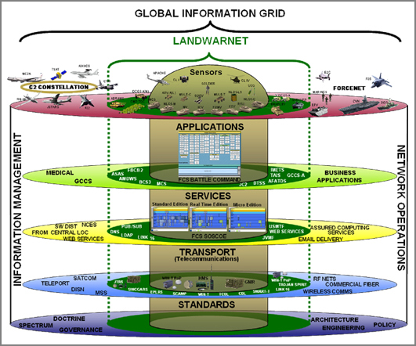
</div>
</div>

<div class="posted">
<br />Posted by <span class="item-creator">Kurt</span>
| <a class="link" href="2008-03.html#e2008-03-11T09_58_24.txt">Permalink</a>

<!-- <br /><a href="archives/2008-03-12T16_36_51.html#comments">Comments</a> -->
</div>
</div>
<div class="item">
<a id="e2008-03-11T09_09_12.txt" name="e2008-03-11T09_09_12.txt"></a>
<h2 class="date">03.11.2008 09:09</h2>
<div class="blogbody">
<h3 class="title">Boston Logan Airport Monitor</h3>
<div class="item-description">
I ran into this by accident:
<br /><br />
Boston Logan Airport has a <a href="http://www.massport.com/logan/airpo_noise_airmo.html">Airport Monitor</a> program.
<br /><br />
<a href="http://www4.passur.com/bos.html">Airport Monitor display</a>
<br /><br />
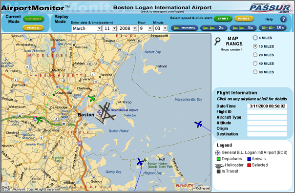
</div>
</div>

<div class="posted">
<br />Posted by <span class="item-creator">Kurt</span>
| <a class="link" href="2008-03.html#e2008-03-11T09_09_12.txt">Permalink</a>

<!-- <br /><a href="archives/2008-03-11T09_58_24.html#comments">Comments</a> -->
</div>
</div>
<div class="item">
<a id="e2008-03-10T18_45_23.txt" name="e2008-03-10T18_45_23.txt"></a>
<h2 class="date">03.10.2008 18:45</h2>
<div class="blogbody">
<h3 class="title">When everyone is running the other direction, maybe you should too</h3>
<div class="item-description">
I'm just going through some of the old cruise photos I have on my
computer.  I ran into this one from 24-Dec-2002.
<br /><br />
This one penguin decided to gawk at the RVIB Palmer as it came
steaming towards their little junk of ice.  Just what was this lone
penguin thinking as a huge orange thing crashed into its berg?
<br /><br />
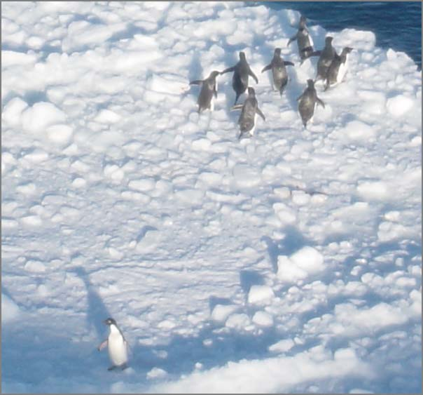
</div>
</div>

<div class="posted">
<br />Posted by <span class="item-creator">Kurt</span>
| <a class="link" href="2008-03.html#e2008-03-10T18_45_23.txt">Permalink</a>

<!-- <br /><a href="archives/2008-03-11T09_09_12.html#comments">Comments</a> -->
</div>
</div>
<div class="item">
<a id="e2008-03-10T13_33_11.txt" name="e2008-03-10T13_33_11.txt"></a>
<h2 class="date">03.10.2008 13:33</h2>
<div class="blogbody">
<h3 class="title">Coastal Explorer for make a cruise plan</h3>
<div class="item-description">
I just went through the process of using Coastal Explorer to create a
cruise plan.  I used the demo version, so I could only add 10 way
points, but it is still enough for a really simple day trip.
<br /><br />
Getting Coastal Explorer installed with the charts was easy.  I
downloaded the zip of all NOAA vector ENC files to my mac. (Google
NOAA ENC).  I used wget to pull down the zip as it seems to get
corrupted when downloaded in firefox.  Why?  I unzipped the whole lot
and copied some of these to "D:\ENC ROOT".  I could not drag the whole
lot from the Mac Desktop to D: as Windows kept complaining about
running out of disk space on C:.
<br /><br />
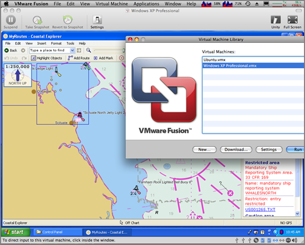
<br /><br />
I used the mouse scroll wheel to add waypoints after clicking on "Add
Route" on the tools bars.  I also used "Add Mark" to place the lime green
circles for a key lighthouse.
<br /><br />
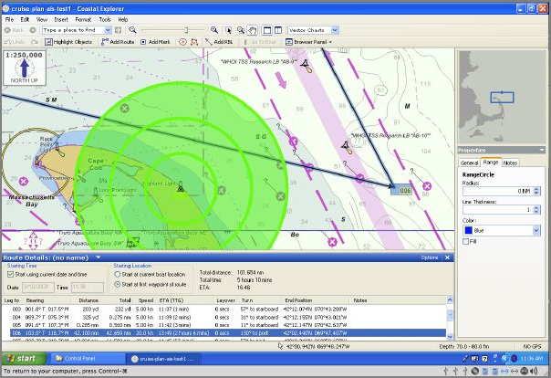
<br /><br />
I can't figure out how to keep that Mark visible when zoomed out, but I am
able to see the whole route and see that I have a 5 hour trip planned.
<br /><br />
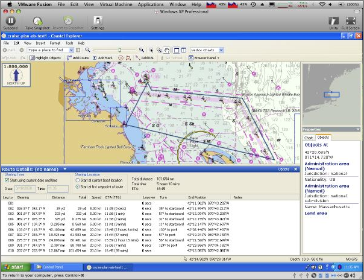
<br /><br />
Then I exported it to Google Earth.  That was easy!
<br /><br />
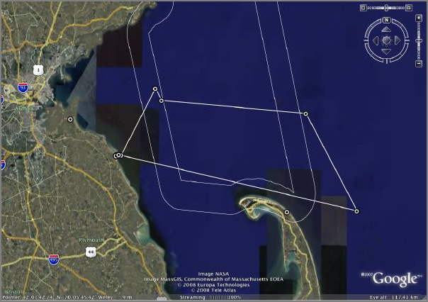
<br /><br />
I also did a save as a NavObject file to see what that looks like.  Nice!
It is is a fairly easy to cope with XML format.  I stripped it down somewhat,
but this still gives the feel.
<pre>
<font color="#2040a0"><strong><font color="4444FF"><strong>&lt;</strong></font><font color="#2040a0">?xml</font> <font color="#2040a0">version=</font><font color="#008000">&quot;1.0&quot;</font><font color="#2040a0">?</font><font color="4444FF"><strong>&gt;</strong></font></strong></font>
<font color="#2040a0"><strong><font color="4444FF"><strong>&lt;</strong></font><font color="#2040a0">NavObjectCollection</font> <font color="#2040a0">created=</font><font color="#008000">&quot;20080310T135105Z&quot;</font><font color="4444FF"><strong>&gt;</strong></font></strong></font>
	<font color="#2040a0"><strong><font color="4444FF"><strong>&lt;</strong></font><font color="#2040a0">Name</font><font color="4444FF"><strong>&gt;</strong></font></strong></font>Navigation Objects<font color="#2040a0"><strong><font color="4444FF"><strong>&lt;</strong></font><font color="#2040a0">/Name</font><font color="4444FF"><strong>&gt;</strong></font></strong></font>
	<font color="#2040a0"><strong><font color="4444FF"><strong>&lt;</strong></font><font color="#2040a0">Visible</font><font color="4444FF"><strong>&gt;</strong></font></strong></font>true<font color="#2040a0"><strong><font color="4444FF"><strong>&lt;</strong></font><font color="#2040a0">/Visible</font><font color="4444FF"><strong>&gt;</strong></font></strong></font>
	<font color="#2040a0"><strong><font color="4444FF"><strong>&lt;</strong></font><font color="#2040a0">ViewSettings</font> <font color="#2040a0">created=</font><font color="#008000">&quot;20080310T151905Z&quot;</font><font color="4444FF"><strong>&gt;</strong></font></strong></font>
		<font color="#2040a0"><strong><font color="4444FF"><strong>&lt;</strong></font><font color="#2040a0">Position</font><font color="4444FF"><strong>&gt;</strong></font></strong></font>42.279836 N 70.713761 W<font color="#2040a0"><strong><font color="4444FF"><strong>&lt;</strong></font><font color="#2040a0">/Position</font><font color="4444FF"><strong>&gt;</strong></font></strong></font>
		<font color="#2040a0"><strong><font color="4444FF"><strong>&lt;</strong></font><font color="#2040a0">Scale</font><font color="4444FF"><strong>&gt;</strong></font></strong></font>250000<font color="#2040a0"><strong><font color="4444FF"><strong>&lt;</strong></font><font color="#2040a0">/Scale</font><font color="4444FF"><strong>&gt;</strong></font></strong></font>
		<font color="#2040a0"><strong><font color="4444FF"><strong>&lt;</strong></font><font color="#2040a0">Quilting</font><font color="4444FF"><strong>&gt;</strong></font></strong></font>true<font color="#2040a0"><strong><font color="4444FF"><strong>&lt;</strong></font><font color="#2040a0">/Quilting</font><font color="4444FF"><strong>&gt;</strong></font></strong></font>
		<font color="#2040a0"><strong><font color="4444FF"><strong>&lt;</strong></font><font color="#2040a0">ShowVectorCharts</font><font color="4444FF"><strong>&gt;</strong></font></strong></font>true<font color="#2040a0"><strong><font color="4444FF"><strong>&lt;</strong></font><font color="#2040a0">/ShowVectorCharts</font><font color="4444FF"><strong>&gt;</strong></font></strong></font>
	<font color="#2040a0"><strong><font color="4444FF"><strong>&lt;</strong></font><font color="#2040a0">/ViewSettings</font><font color="4444FF"><strong>&gt;</strong></font></strong></font>
	<font color="#2040a0"><strong><font color="4444FF"><strong>&lt;</strong></font><font color="#2040a0">Route</font> <font color="#2040a0">created=</font><font color="#008000">&quot;20080310T152003Z&quot;</font> <font color="#2040a0">id=</font><font color="#008000">&quot;{39e52668-a6b9-46fb-be84-2aa2d1cbef8a}&quot;</font><font color="4444FF"><strong>&gt;</strong></font></strong></font>
		<font color="#2040a0"><strong><font color="4444FF"><strong>&lt;</strong></font><font color="#2040a0">Marks</font><font color="4444FF"><strong>&gt;</strong></font></strong></font>
		{b60d8abf-eeca-4e76-97ae-f1d22e2c4dd8}
		{d912b4ed-b258-45f0-8645-f1402dcb6e09}
		{6b42b864-9817-49aa-8ff4-ec49a93aac08}
		<font color="#2040a0"><strong><font color="4444FF"><strong>&lt;</strong></font><font color="#2040a0">/Marks</font><font color="4444FF"><strong>&gt;</strong></font></strong></font>
		<font color="#2040a0"><strong><font color="4444FF"><strong>&lt;</strong></font><font color="#2040a0">RouteLeg</font> <font color="#2040a0">created=</font><font color="#008000">&quot;20080310T152012Z&quot;</font> <font color="#2040a0">id=</font><font color="#008000">&quot;{40773fa6-0228-43f5-b129-41caa78b6fd1}&quot;</font><font color="4444FF"><strong>&gt;</strong></font></strong></font>
			<font color="#2040a0"><strong><font color="4444FF"><strong>&lt;</strong></font><font color="#2040a0">PlannedSpeed</font><font color="4444FF"><strong>&gt;</strong></font></strong></font>5.00 kn<font color="#2040a0"><strong><font color="4444FF"><strong>&lt;</strong></font><font color="#2040a0">/PlannedSpeed</font><font color="4444FF"><strong>&gt;</strong></font></strong></font>
		<font color="#2040a0"><strong><font color="4444FF"><strong>&lt;</strong></font><font color="#2040a0">/RouteLeg</font><font color="4444FF"><strong>&gt;</strong></font></strong></font>
		<font color="#2040a0"><strong><font color="4444FF"><strong>&lt;</strong></font><font color="#2040a0">RouteLeg</font> <font color="#2040a0">created=</font><font color="#008000">&quot;20080310T152014Z&quot;</font> <font color="#2040a0">id=</font><font color="#008000">&quot;{3a08fd9e-928e-46a4-861b-5a6ac179391f}&quot;</font><font color="4444FF"><strong>&gt;</strong></font></strong></font>
			<font color="#2040a0"><strong><font color="4444FF"><strong>&lt;</strong></font><font color="#2040a0">PlannedSpeed</font><font color="4444FF"><strong>&gt;</strong></font></strong></font>5.00 kn<font color="#2040a0"><strong><font color="4444FF"><strong>&lt;</strong></font><font color="#2040a0">/PlannedSpeed</font><font color="4444FF"><strong>&gt;</strong></font></strong></font>
		<font color="#2040a0"><strong><font color="4444FF"><strong>&lt;</strong></font><font color="#2040a0">/RouteLeg</font><font color="4444FF"><strong>&gt;</strong></font></strong></font>
		<font color="#2040a0"><strong><font color="4444FF"><strong>&lt;</strong></font><font color="#2040a0">RouteLeg</font> <font color="#2040a0">created=</font><font color="#008000">&quot;20080310T152055Z&quot;</font> <font color="#2040a0">id=</font><font color="#008000">&quot;{ec30467b-0746-4ee9-9acc-c1c1abf26b8e}&quot;</font><font color="4444FF"><strong>&gt;</strong></font></strong></font>
			<font color="#2040a0"><strong><font color="4444FF"><strong>&lt;</strong></font><font color="#2040a0">PlannedSpeed</font><font color="4444FF"><strong>&gt;</strong></font></strong></font>20.0 kn<font color="#2040a0"><strong><font color="4444FF"><strong>&lt;</strong></font><font color="#2040a0">/PlannedSpeed</font><font color="4444FF"><strong>&gt;</strong></font></strong></font>
		<font color="#2040a0"><strong><font color="4444FF"><strong>&lt;</strong></font><font color="#2040a0">/RouteLeg</font><font color="4444FF"><strong>&gt;</strong></font></strong></font>
		<font color="#2040a0"><strong><font color="4444FF"><strong>&lt;</strong></font><font color="#2040a0">TotalLength</font><font color="4444FF"><strong>&gt;</strong></font></strong></font>101.65 NM<font color="#2040a0"><strong><font color="4444FF"><strong>&lt;</strong></font><font color="#2040a0">/TotalLength</font><font color="4444FF"><strong>&gt;</strong></font></strong></font>
	<font color="#2040a0"><strong><font color="4444FF"><strong>&lt;</strong></font><font color="#2040a0">/Route</font><font color="4444FF"><strong>&gt;</strong></font></strong></font>
	<font color="#2040a0"><strong><font color="4444FF"><strong>&lt;</strong></font><font color="#2040a0">Mark</font> <font color="#2040a0">created=</font><font color="#008000">&quot;20080310T152431Z&quot;</font> <font color="#2040a0">id=</font><font color="#008000">&quot;{31edcd4b-133e-4f05-aec2-8cb88635228a}&quot;</font><font color="4444FF"><strong>&gt;</strong></font></strong></font>
		<font color="#2040a0"><strong><font color="4444FF"><strong>&lt;</strong></font><font color="#2040a0">Color</font><font color="4444FF"><strong>&gt;</strong></font></strong></font>rgb(0, 1, 0)<font color="#2040a0"><strong><font color="4444FF"><strong>&lt;</strong></font><font color="#2040a0">/Color</font><font color="4444FF"><strong>&gt;</strong></font></strong></font>
		<font color="#2040a0"><strong><font color="4444FF"><strong>&lt;</strong></font><font color="#2040a0">Position</font><font color="4444FF"><strong>&gt;</strong></font></strong></font>42.039215 N 70.060439 W<font color="#2040a0"><strong><font color="4444FF"><strong>&lt;</strong></font><font color="#2040a0">/Position</font><font color="4444FF"><strong>&gt;</strong></font></strong></font>
		<font color="#2040a0"><strong><font color="4444FF"><strong>&lt;</strong></font><font color="#2040a0">Icon</font><font color="4444FF"><strong>&gt;</strong></font></strong></font>Triangle<font color="#2040a0"><strong><font color="4444FF"><strong>&lt;</strong></font><font color="#2040a0">/Icon</font><font color="4444FF"><strong>&gt;</strong></font></strong></font>
		<font color="#2040a0"><strong><font color="4444FF"><strong>&lt;</strong></font><font color="#2040a0">ArrivalCircleRadius</font><font color="4444FF"><strong>&gt;</strong></font></strong></font>1.5 NM<font color="#2040a0"><strong><font color="4444FF"><strong>&lt;</strong></font><font color="#2040a0">/ArrivalCircleRadius</font><font color="4444FF"><strong>&gt;</strong></font></strong></font>
		<font color="#2040a0"><strong><font color="4444FF"><strong>&lt;</strong></font><font color="#2040a0">RangeCircleColor</font><font color="4444FF"><strong>&gt;</strong></font></strong></font>rgb(0, 1, 0)<font color="#2040a0"><strong><font color="4444FF"><strong>&lt;</strong></font><font color="#2040a0">/RangeCircleColor</font><font color="4444FF"><strong>&gt;</strong></font></strong></font>
		<font color="#2040a0"><strong><font color="4444FF"><strong>&lt;</strong></font><font color="#2040a0">RangeCircleDisplayCount</font><font color="4444FF"><strong>&gt;</strong></font></strong></font>3<font color="#2040a0"><strong><font color="4444FF"><strong>&lt;</strong></font><font color="#2040a0">/RangeCircleDisplayCount</font><font color="4444FF"><strong>&gt;</strong></font></strong></font>
		<font color="#2040a0"><strong><font color="4444FF"><strong>&lt;</strong></font><font color="#2040a0">RangeCirclePenWidth</font><font color="4444FF"><strong>&gt;</strong></font></strong></font>5<font color="#2040a0"><strong><font color="4444FF"><strong>&lt;</strong></font><font color="#2040a0">/RangeCirclePenWidth</font><font color="4444FF"><strong>&gt;</strong></font></strong></font>
		<font color="#2040a0"><strong><font color="4444FF"><strong>&lt;</strong></font><font color="#2040a0">RangeCircleRadius</font><font color="4444FF"><strong>&gt;</strong></font></strong></font>2 NM<font color="#2040a0"><strong><font color="4444FF"><strong>&lt;</strong></font><font color="#2040a0">/RangeCircleRadius</font><font color="4444FF"><strong>&gt;</strong></font></strong></font>
		<font color="#2040a0"><strong><font color="4444FF"><strong>&lt;</strong></font><font color="#2040a0">RangeCircleFill</font><font color="4444FF"><strong>&gt;</strong></font></strong></font>true<font color="#2040a0"><strong><font color="4444FF"><strong>&lt;</strong></font><font color="#2040a0">/RangeCircleFill</font><font color="4444FF"><strong>&gt;</strong></font></strong></font>
		<font color="#2040a0"><strong><font color="4444FF"><strong>&lt;</strong></font><font color="#2040a0">NameOffset</font><font color="4444FF"><strong>&gt;</strong></font></strong></font>0,8<font color="#2040a0"><strong><font color="4444FF"><strong>&lt;</strong></font><font color="#2040a0">/NameOffset</font><font color="4444FF"><strong>&gt;</strong></font></strong></font>
		<font color="#2040a0"><strong><font color="4444FF"><strong>&lt;</strong></font><font color="#2040a0">DescriptionOffset</font><font color="4444FF"><strong>&gt;</strong></font></strong></font>0,24<font color="#2040a0"><strong><font color="4444FF"><strong>&lt;</strong></font><font color="#2040a0">/DescriptionOffset</font><font color="4444FF"><strong>&gt;</strong></font></strong></font>
		<font color="#2040a0"><strong><font color="4444FF"><strong>&lt;</strong></font><font color="#2040a0">ExistsOutsideCollection</font><font color="4444FF"><strong>&gt;</strong></font></strong></font>true<font color="#2040a0"><strong><font color="4444FF"><strong>&lt;</strong></font><font color="#2040a0">/ExistsOutsideCollection</font><font color="4444FF"><strong>&gt;</strong></font></strong></font>
		<font color="#2040a0"><strong><font color="4444FF"><strong>&lt;</strong></font><font color="#2040a0">Name</font><font color="4444FF"><strong>&gt;</strong></font></strong></font>Site1<font color="#2040a0"><strong><font color="4444FF"><strong>&lt;</strong></font><font color="#2040a0">/Name</font><font color="4444FF"><strong>&gt;</strong></font></strong></font>
		<font color="#2040a0"><strong><font color="4444FF"><strong>&lt;</strong></font><font color="#2040a0">LockPosition</font><font color="4444FF"><strong>&gt;</strong></font></strong></font>true<font color="#2040a0"><strong><font color="4444FF"><strong>&lt;</strong></font><font color="#2040a0">/LockPosition</font><font color="4444FF"><strong>&gt;</strong></font></strong></font>
	<font color="#2040a0"><strong><font color="4444FF"><strong>&lt;</strong></font><font color="#2040a0">/Mark</font><font color="4444FF"><strong>&gt;</strong></font></strong></font>
	<font color="#2040a0"><strong><font color="4444FF"><strong>&lt;</strong></font><font color="#2040a0">Mark</font> <font color="#2040a0">created=</font><font color="#008000">&quot;20080310T153150Z&quot;</font> <font color="#2040a0">id=</font><font color="#008000">&quot;{18383904-cf36-41a8-b9d7-4a3b4b8279a0}&quot;</font><font color="4444FF"><strong>&gt;</strong></font></strong></font>
		<font color="#2040a0"><strong><font color="4444FF"><strong>&lt;</strong></font><font color="#2040a0">Color</font><font color="4444FF"><strong>&gt;</strong></font></strong></font>rgb(0, 1, 0)<font color="#2040a0"><strong><font color="4444FF"><strong>&lt;</strong></font><font color="#2040a0">/Color</font><font color="4444FF"><strong>&gt;</strong></font></strong></font>
		<font color="#2040a0"><strong><font color="4444FF"><strong>&lt;</strong></font><font color="#2040a0">Position</font><font color="4444FF"><strong>&gt;</strong></font></strong></font>42.304025 N 70.898522 W<font color="#2040a0"><strong><font color="4444FF"><strong>&lt;</strong></font><font color="#2040a0">/Position</font><font color="4444FF"><strong>&gt;</strong></font></strong></font>
		<font color="#2040a0"><strong><font color="4444FF"><strong>&lt;</strong></font><font color="#2040a0">Icon</font><font color="4444FF"><strong>&gt;</strong></font></strong></font>Triangle<font color="#2040a0"><strong><font color="4444FF"><strong>&lt;</strong></font><font color="#2040a0">/Icon</font><font color="4444FF"><strong>&gt;</strong></font></strong></font>
		<font color="#2040a0"><strong><font color="4444FF"><strong>&lt;</strong></font><font color="#2040a0">ArrivalCircleRadius</font><font color="4444FF"><strong>&gt;</strong></font></strong></font>0.05 NM<font color="#2040a0"><strong><font color="4444FF"><strong>&lt;</strong></font><font color="#2040a0">/ArrivalCircleRadius</font><font color="4444FF"><strong>&gt;</strong></font></strong></font>
		<font color="#2040a0"><strong><font color="4444FF"><strong>&lt;</strong></font><font color="#2040a0">RangeCircleColor</font><font color="4444FF"><strong>&gt;</strong></font></strong></font>rgb(0, 1, 0)<font color="#2040a0"><strong><font color="4444FF"><strong>&lt;</strong></font><font color="#2040a0">/RangeCircleColor</font><font color="4444FF"><strong>&gt;</strong></font></strong></font>
		<font color="#2040a0"><strong><font color="4444FF"><strong>&lt;</strong></font><font color="#2040a0">RangeCircleDisplayCount</font><font color="4444FF"><strong>&gt;</strong></font></strong></font>3<font color="#2040a0"><strong><font color="4444FF"><strong>&lt;</strong></font><font color="#2040a0">/RangeCircleDisplayCount</font><font color="4444FF"><strong>&gt;</strong></font></strong></font>
		<font color="#2040a0"><strong><font color="4444FF"><strong>&lt;</strong></font><font color="#2040a0">RangeCirclePenWidth</font><font color="4444FF"><strong>&gt;</strong></font></strong></font>3<font color="#2040a0"><strong><font color="4444FF"><strong>&lt;</strong></font><font color="#2040a0">/RangeCirclePenWidth</font><font color="4444FF"><strong>&gt;</strong></font></strong></font>
		<font color="#2040a0"><strong><font color="4444FF"><strong>&lt;</strong></font><font color="#2040a0">RangeCircleRadius</font><font color="4444FF"><strong>&gt;</strong></font></strong></font>2 NM<font color="#2040a0"><strong><font color="4444FF"><strong>&lt;</strong></font><font color="#2040a0">/RangeCircleRadius</font><font color="4444FF"><strong>&gt;</strong></font></strong></font>
		<font color="#2040a0"><strong><font color="4444FF"><strong>&lt;</strong></font><font color="#2040a0">RangeCircleFill</font><font color="4444FF"><strong>&gt;</strong></font></strong></font>true<font color="#2040a0"><strong><font color="4444FF"><strong>&lt;</strong></font><font color="#2040a0">/RangeCircleFill</font><font color="4444FF"><strong>&gt;</strong></font></strong></font>
		<font color="#2040a0"><strong><font color="4444FF"><strong>&lt;</strong></font><font color="#2040a0">NameOffset</font><font color="4444FF"><strong>&gt;</strong></font></strong></font>0,8<font color="#2040a0"><strong><font color="4444FF"><strong>&lt;</strong></font><font color="#2040a0">/NameOffset</font><font color="4444FF"><strong>&gt;</strong></font></strong></font>
		<font color="#2040a0"><strong><font color="4444FF"><strong>&lt;</strong></font><font color="#2040a0">DescriptionOffset</font><font color="4444FF"><strong>&gt;</strong></font></strong></font>0,24<font color="#2040a0"><strong><font color="4444FF"><strong>&lt;</strong></font><font color="#2040a0">/DescriptionOffset</font><font color="4444FF"><strong>&gt;</strong></font></strong></font>
		<font color="#2040a0"><strong><font color="4444FF"><strong>&lt;</strong></font><font color="#2040a0">ExistsOutsideCollection</font><font color="4444FF"><strong>&gt;</strong></font></strong></font>true<font color="#2040a0"><strong><font color="4444FF"><strong>&lt;</strong></font><font color="#2040a0">/ExistsOutsideCollection</font><font color="4444FF"><strong>&gt;</strong></font></strong></font>
		<font color="#2040a0"><strong><font color="4444FF"><strong>&lt;</strong></font><font color="#2040a0">Name</font><font color="4444FF"><strong>&gt;</strong></font></strong></font>New Mark<font color="#2040a0"><strong><font color="4444FF"><strong>&lt;</strong></font><font color="#2040a0">/Name</font><font color="4444FF"><strong>&gt;</strong></font></strong></font>
	<font color="#2040a0"><strong><font color="4444FF"><strong>&lt;</strong></font><font color="#2040a0">/Mark</font><font color="4444FF"><strong>&gt;</strong></font></strong></font>
	<font color="#2040a0"><strong><font color="4444FF"><strong>&lt;</strong></font><font color="#2040a0">Mark</font> <font color="#2040a0">created=</font><font color="#008000">&quot;20080310T152006Z&quot;</font> <font color="#2040a0">id=</font><font color="#008000">&quot;{62a18191-e3d9-4f9e-ab15-3ec90f177bae}&quot;</font><font color="4444FF"><strong>&gt;</strong></font></strong></font>
		<font color="#2040a0"><strong><font color="4444FF"><strong>&lt;</strong></font><font color="#2040a0">Position</font><font color="4444FF"><strong>&gt;</strong></font></strong></font>42.199365 N 70.720028 W<font color="#2040a0"><strong><font color="4444FF"><strong>&lt;</strong></font><font color="#2040a0">/Position</font><font color="4444FF"><strong>&gt;</strong></font></strong></font>
		<font color="#2040a0"><strong><font color="4444FF"><strong>&lt;</strong></font><font color="#2040a0">ArrivalCircleRadius</font><font color="4444FF"><strong>&gt;</strong></font></strong></font>0.05 NM<font color="#2040a0"><strong><font color="4444FF"><strong>&lt;</strong></font><font color="#2040a0">/ArrivalCircleRadius</font><font color="4444FF"><strong>&gt;</strong></font></strong></font>
		<font color="#2040a0"><strong><font color="4444FF"><strong>&lt;</strong></font><font color="#2040a0">RangeCircleRadius</font><font color="4444FF"><strong>&gt;</strong></font></strong></font>0 NM<font color="#2040a0"><strong><font color="4444FF"><strong>&lt;</strong></font><font color="#2040a0">/RangeCircleRadius</font><font color="4444FF"><strong>&gt;</strong></font></strong></font>
		<font color="#2040a0"><strong><font color="4444FF"><strong>&lt;</strong></font><font color="#2040a0">NameOffset</font><font color="4444FF"><strong>&gt;</strong></font></strong></font>-12,-19<font color="#2040a0"><strong><font color="4444FF"><strong>&lt;</strong></font><font color="#2040a0">/NameOffset</font><font color="4444FF"><strong>&gt;</strong></font></strong></font>
		<font color="#2040a0"><strong><font color="4444FF"><strong>&lt;</strong></font><font color="#2040a0">DescriptionOffset</font><font color="4444FF"><strong>&gt;</strong></font></strong></font>0,24<font color="#2040a0"><strong><font color="4444FF"><strong>&lt;</strong></font><font color="#2040a0">/DescriptionOffset</font><font color="4444FF"><strong>&gt;</strong></font></strong></font>
		<font color="#2040a0"><strong><font color="4444FF"><strong>&lt;</strong></font><font color="#2040a0">Name</font><font color="4444FF"><strong>&gt;</strong></font></strong></font>001<font color="#2040a0"><strong><font color="4444FF"><strong>&lt;</strong></font><font color="#2040a0">/Name</font><font color="4444FF"><strong>&gt;</strong></font></strong></font>
	<font color="#2040a0"><strong><font color="4444FF"><strong>&lt;</strong></font><font color="#2040a0">/Mark</font><font color="4444FF"><strong>&gt;</strong></font></strong></font>
<font color="#2040a0"><strong><font color="4444FF"><strong>&lt;</strong></font><font color="#2040a0">/NavObjectCollection</font><font color="4444FF"><strong>&gt;</strong></font></strong></font>
</pre>
</div>
</div>

<div class="posted">
<br />Posted by <span class="item-creator">Kurt</span>
| <a class="link" href="2008-03.html#e2008-03-10T13_33_11.txt">Permalink</a>

<!-- <br /><a href="archives/2008-03-10T18_45_23.html#comments">Comments</a> -->
</div>
</div>
<div class="item">
<a id="e2008-03-09T18_02_38.txt" name="e2008-03-09T18_02_38.txt"></a>
<h2 class="date">03.09.2008 18:02</h2>
<div class="blogbody">
<h3 class="title">noaadata 0.36 released</h3>
<div class="item-description">
<a href="http://vislab-ccom.unh.edu/~schwehr/software/noaadata/">noaadata</a> 0.36 is now available for download.  The changes:
<br /><br />
<ul>
    <li>All AIS messages can now generate a NMEA message</li>
    <li>timed_circular_notice: Released to external development.<br/> 
      Minor tweaks and cleanup to the xml for cleanup.<br/> 
      Added a few more area types for visibility, AUV, ROV, divers and swimmers.<br/> 
      Changed the radius to a Decimal type to allow 10 m increments.<br/> 
    </li>
    <li>whalenotice1: this msg is not under consideration, but did some tweaking as a thought experiment</li>
    <li>aisutils/uscg.py: added create_nmea for all AIS messages to use</li>
    <li>django: Added DAC for countries.  Added dac.sql with the db entries</li>
    <li>Minor cleanup on the init scripts.  Still needs more help</li>
    <li>ais-net-to-postgis: cleanTime can be set</li>
    <li>data/sbnms.kml: added the sanctuary boundaries</li>
</ul>
</div>
</div>

<div class="posted">
<br />Posted by <span class="item-creator">Kurt</span>
| <a class="link" href="2008-03.html#e2008-03-09T18_02_38.txt">Permalink</a>

<!-- <br /><a href="archives/2008-03-10T13_33_11.html#comments">Comments</a> -->
</div>
</div>
<div class="item">
<a id="e2008-03-08T09_39_38.txt" name="e2008-03-08T09_39_38.txt"></a>
<h2 class="date">03.08.2008 09:39</h2>
<div class="blogbody">
<h3 class="title">Running Win XP Pro and Ubuntu at the same time</h3>
<div class="item-description">
Which ever gets started 2nd looses out on access to system resources
like the CD drive, but it works!  The system even stays responsive.
Here is what it looks like to be running both:
<br /><br />
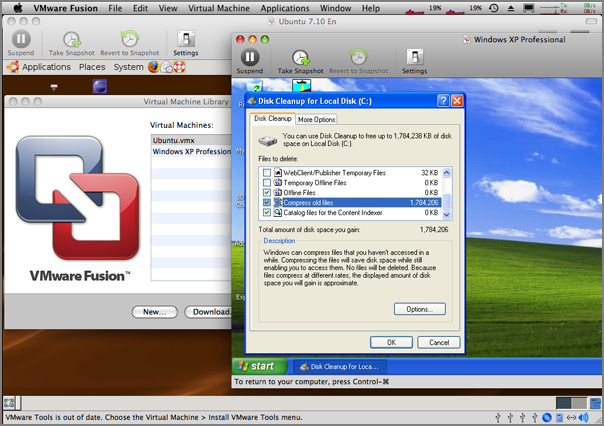
</div>
</div>

<div class="posted">
<br />Posted by <span class="item-creator">Kurt</span>
| <a class="link" href="2008-03.html#e2008-03-08T09_39_38.txt">Permalink</a>

<!-- <br /><a href="archives/2008-03-09T18_02_38.html#comments">Comments</a> -->
</div>
</div>
<div class="item">
<a id="e2008-03-08T06_17_14.txt" name="e2008-03-08T06_17_14.txt"></a>
<h2 class="date">03.08.2008 06:17</h2>
<div class="blogbody">
<h3 class="title">Palanterra and iDomain</h3>
<div class="item-description">
Here are two Common Operating Picture (COP) / Domain Awareness systems
from the government.  I do not know much about them, but I realized that
I have never blogged about these.
<br /><br />
<a
href="http://www.nima.mil/NGASiteContent/StaticFiles/OCR/Geo0704.pdf">Palanterra</a>
[pdf - nima.mil] the National Geospatial-Intelligence Agency [NGA].  This article
if from 2004.
<br /><br />
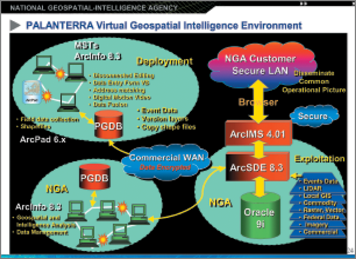
<br /><br />
<a href="http://www.directionsmag.com/article.php?article_id=2695&trv=1">The FBI's GIS Initiative - iDomain</a> [directions mag]
<pre>
Until 2005 the Federal Bureau of Investigation (FBI) depended on a
"thick client" approach to GIS that included ArcGIS deployed at 12
field offices with limited means for sharing information. Despite
recognition by the FBI's director of intelligence that GIS was a key
technology for its work, no coordinated efforts to manage the GIS
initiatives were forthcoming. That changed in 2005 with the Domain
Management Initiative, iDomain. iDomain is a Web-based mapping
application based on the National Geospatial-Intelligence Agency's
(NGA) Palanterra (pdf), which is a secure, common operational picture
Web portal held behind the FBI's firewall.
</pre>
That really isn't much information.
</div>
</div>

<div class="posted">
<br />Posted by <span class="item-creator">Kurt</span>
| <a class="link" href="2008-03.html#e2008-03-08T06_17_14.txt">Permalink</a>

<!-- <br /><a href="archives/2008-03-08T09_39_38.html#comments">Comments</a> -->
</div>
</div>
<div class="item">
<a id="e2008-03-07T15_29_13.txt" name="e2008-03-07T15_29_13.txt"></a>
<h2 class="date">03.07.2008 15:29</h2>
<div class="blogbody">
<h3 class="title">Windows XP Pro in VMware Fusion</h3>
<div class="item-description">
With a ton of help from Roland, I have VMware running Windows XP Pro
Enterprise on my Intel Mac laptop.  Now I can try out the <a
href="http://rosepointnav.com/CoastalExplorer/">Coastal Explorer</a>
to create my cruise plan.  I've downloaded the entire NOAA collection
of ENC charts.  Drag and drop from the Mac Desktop to Windows Desktop
claims to work, but I have no idea where the file went.  However,
putting the file on a USB drive worked wonders.  I inserted the USB
drive and Windows running in VMWare mounted the drive and I was able
to copy the file I wanted in Windows.
<br /><br />
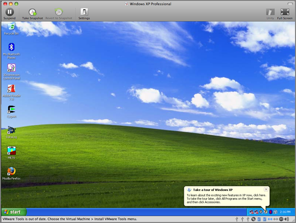
</div>
</div>

<div class="posted">
<br />Posted by <span class="item-creator">Kurt</span>
| <a class="link" href="2008-03.html#e2008-03-07T15_29_13.txt">Permalink</a>

<!-- <br /><a href="archives/2008-03-08T06_17_14.html#comments">Comments</a> -->
</div>
</div>
<div class="item">
<a id="e2008-03-07T13_50_14.txt" name="e2008-03-07T13_50_14.txt"></a>
<h2 class="date">03.07.2008 13:50</h2>
<div class="blogbody">
<h3 class="title">WiMax Sea Port</h3>
<div class="item-description">
<a href="http://www.marinebuzz.com/2008/03/07/singapore-is-now-the-worlds-first-wimax-sea-port/">Singapore is now the World's First WiMax Sea Port</a> [marine buzz]
<pre>
Singapore has now become the World's First WiMax Sea Port
(WIreless-broadband-access for SEa Port, or WISEPORT) by the joint
efforts of Maritime and Port Authority of Singapore (MPA), Infocomm
Development Authority (IDA) and QMax Communications Pte Ltd
(QMax). The WISEPORT project was carried out in three years at a cost
of S$12 million.
...
</pre>
</div>
</div>

<div class="posted">
<br />Posted by <span class="item-creator">Kurt</span>
| <a class="link" href="2008-03.html#e2008-03-07T13_50_14.txt">Permalink</a>

<!-- <br /><a href="archives/2008-03-07T15_29_13.html#comments">Comments</a> -->
</div>
</div>
<div class="item">
<a id="e2008-03-07T13_42_52.txt" name="e2008-03-07T13_42_52.txt"></a>
<h2 class="date">03.07.2008 13:42</h2>
<div class="blogbody">
<h3 class="title">Whale Strike bill H.R. 5536</h3>
<div class="item-description">
<a href="http://www.marinelink.com/Story/ShowStory.aspx?StoryID=211141">Bill Seeks to Reduce Whale Strikes</a>
<pre>
Friday, March 07, 2008
Representative Allen (D-ME) introduced a bill (H.R. 5536) to require
the Secretary of Commerce to prescribe regulations to reduce the
incidence of vessels colliding with North Atlantic right whales by
limiting the speed of vessels, and for other purposes. (HK Law).
</pre>
<br /><br />
<a href="http://www.govtrack.us/congress/billtext.xpd?bill=h110-5536">H.R. 5536: To require the Secretary of Commerce to prescribe regulations to reduce the incidence of vessels...</a> [govtrack.us]
<br /><br />
<a href="http://www.govtrack.us/data/us/bills.text/110/h/h5536.pdf">h5536.pdf</a>
<br /><br />
It is great that you can subribe to an RSS feed for the progress/status of a bill:  <a href="http://www.govtrack.us/users/events-rss2.xpd?monitors=bill:h110-5536">h110-5536 RSS</a>
</div>
</div>

<div class="posted">
<br />Posted by <span class="item-creator">Kurt</span>
| <a class="link" href="2008-03.html#e2008-03-07T13_42_52.txt">Permalink</a>

<!-- <br /><a href="archives/2008-03-07T13_50_14.html#comments">Comments</a> -->
</div>
</div>
<div class="item">
<a id="e2008-03-07T11_27_58.txt" name="e2008-03-07T11_27_58.txt"></a>
<h2 class="date">03.07.2008 11:27</h2>
<div class="blogbody">
<h3 class="title">Cosco Busan Enquiry Begins Apr 8th</h3>
<div class="item-description">
<a href="http://maritimeaccident.wordpress.com/2008/03/07/cosco-busan-enquiry-begins-april-8/">Cosco Busan Enquiry Begins April 8</a> [Maritime Accident Casebook]
<pre>
From the NTSB:
NTSB ANNOUNCES HEARING ON CONTAINER SHIP/BAY BRIDGE ACCIDENT
The US National Transportation Safety Board will hold a two-day public
hearing as part of its ongoing investigation into the accident in
which the 901-foot container ship M/V Cosco Busan spilled about 55,000
gallons of fuel oil after striking the San Francisco-Oakland Bay
Bridge. The hearing will convene at 8:30 a.m. on Tuesday, April 8,
2008, at the NTSB's Board Room and Conference Center, 429 L'Enfant
Plaza, SW., Washington, D.C.
</pre>
</div>
</div>

<div class="posted">
<br />Posted by <span class="item-creator">Kurt</span>
| <a class="link" href="2008-03.html#e2008-03-07T11_27_58.txt">Permalink</a>

<!-- <br /><a href="archives/2008-03-07T13_42_52.html#comments">Comments</a> -->
</div>
</div>
<div class="item">
<a id="e2008-03-06T19_46_44.txt" name="e2008-03-06T19_46_44.txt"></a>
<h2 class="date">03.06.2008 19:46</h2>
<div class="blogbody">
<h3 class="title">Adding unix groups to mac osx 10.5 (Leopard)</h3>
<div class="item-description">
This one was a bit hard to figure out.  It is definitely time to start
working on a replacement for userutils on Mac OSX 10.5.  The niutils world
from 10.4 and older (and the land of NeXT) is gone in Leopard.  Here is
creating a group and removing it.  If you skip '-v' it won't spew quite 
so much.
<br /><br />
Create a group:
<pre>
% <b>dseditgroup -v -o create newgroup</b>
dseditgroup verbose mode
Options selected by user:
Create option selected
Username determined to be <root>
Groupname provided as <newgroup>
.
dsFindDirNodes using local node
dsGetRecordList found no record
dsDoAttributeValueSearch found no record
Next free gid value determined and added
GUID value created and added
Group Record <newgroup> Created
.
Recordname <newgroup>
5 attribute(s) found
Attribute[1] is <dsAttrTypeStandard:PrimaryGroupID>
        Value[1] is <500>
Attribute[2] is <dsAttrTypeStandard:GeneratedUID>
        Value[1] is <383A517F-3E6F-492E-A194-0983CF78C2E1>
Attribute[3] is <dsAttrTypeStandard:RecordType>
        Value[1] is <dsRecTypeStandard:Groups>
Attribute[4] is <dsAttrTypeStandard:RecordName>
        Value[1] is <newgroup>
Attribute[5] is <dsAttrTypeStandard:AppleMetaNodeLocation>
        Value[1] is </Local/Default>
</pre>
That is some verbose mode!  Now use the group:
<pre>
% <b>touch foo</b>
% <b>chgrp newgroup foo</b>
% <b>ls -l foo</b>
-rw-r--r-- 1 root newgroup 0 Mar  6 19:27 foo
</pre>
That worked.  Time to get rid of this newgroup.
<pre>
% <b>dseditgroup -v -q -o delete newgroup</b>
dseditgroup verbose mode
Options selected by user:
Delete option selected
User verification is disabled
Username determined to be <root>
Groupname provided as <newgroup>
.
dsFindDirNodes using local node
Group Record <newgroup> to be Deleted
.
Recordname <newgroup>
5 attribute(s) found
Attribute[1] is <dsAttrTypeStandard:RecordType>
        Value[1] is <dsRecTypeStandard:Groups>
Attribute[2] is <dsAttrTypeStandard:RecordName>
        Value[1] is <newgroup>
Attribute[3] is <dsAttrTypeStandard:GeneratedUID>
        Value[1] is <383A517F-3E6F-492E-A194-0983CF78C2E1>
Attribute[4] is <dsAttrTypeStandard:PrimaryGroupID>
        Value[1] is <500>
Attribute[5] is <dsAttrTypeStandard:AppleMetaNodeLocation>
        Value[1] is </Local/Default>
Record has been deleted
.
</pre>
Double check that it really is gone:
<pre> 
% <b>ls -l foo</b>
-rw-r--r-- 1 root 500 0 Mar  6 19:27 foo
</pre>
See Also: <a href="http://en.wikipedia.org/wiki/NetInfo_Manager">NetInfo Manager</a> in wikipedia.
Despite the title, it has a lot on Leopard
</div>
</div>

<div class="posted">
<br />Posted by <span class="item-creator">Kurt</span>
| <a class="link" href="2008-03.html#e2008-03-06T19_46_44.txt">Permalink</a>

<!-- <br /><a href="archives/2008-03-07T11_27_58.html#comments">Comments</a> -->
</div>
</div>
<div class="item">
<a id="e2008-03-06T09_18_06.txt" name="e2008-03-06T09_18_06.txt"></a>
<h2 class="date">03.06.2008 09:18</h2>
<div class="blogbody">
<h3 class="title">Bulding a better rat trap - working with older C code</h3>
<div class="item-description">
I got a chance yesterday to give a look at some older C code that has
had a long history of being passed from person to person.  I was looking
to see how hard a port to Mac OSX with X11 would be.  It's too much
for me right now, but here are some notes on how to approach this type 
of problem.  The are huge number of code bases floating around just 
like the one I was inspecting.  People have invested huge amounts of
time in this code it is a shame to not bring the code up to date.
<br /><br />
The first thing was to update the Makefile.  I just go ahead and force
the makefile to be GNU specific.  Roland would say that I should switch
to scons, but here the project has been make based for 15 years.
People often list out all the object files that they want to build.
This is brittle and labor intensive.  The best thing to do is get
make to build every source file in the directory:
<pre>
SRCS:=${wildcard *.c}
OBJS:=${SRCS:.c=.o}
</pre>
That can remove huge numbers of lines from makefiles.  Then I don't
have to wonder which source is being used by the project and which
is rafted.  I just go ahead and svn rm anything that is no longer in
use.  It's svn, so if need be, it can always come back.
<br /><br />
Then the next step is to make the gnu compiler go agro over checking
the code.  I make warnings errors and fix every one of them.  If all
warnings are fixed, then when you are working forward, then you will
notice when things get a little sketchy.  It keeps you honest about
what you are doing.  In C, that honesty can save you from days of
pain staring at the debugger.
<br /><br />
Here is the makefile that I came up with for building a library:
<pre>
<font color="orange"># GNU Make specific code</font>
<font color="2040a0">RANLIB :=</font> ranlib  <font color="orange"># Make this /bin/true for systems without ranlib</font>
<font color="orange"># Be as aggressive as possible about code correctness</font>
<font color="2040a0">CFLAGS :=</font> -Wall
<font color="2040a0">CFLAGS +=</font> -Wimplicit 
<font color="2040a0">CFLAGS +=</font> -pedantic 
<font color="2040a0">CFLAGS +=</font> -W 
<font color="2040a0">CFLAGS +=</font> -Wredundant-decls
<font color="2040a0">CFLAGS +=</font> -Werror
ifdef OPTIMIZE
<font color="2040a0">  CFLAGS +=</font> -O3 -funroll-loops -fexpensive-optimizations -DNDEBUG
<font color="2040a0">  CFLAGS +=</font> -ffast-math 
else
<font color="2040a0">  CFLAGS +=</font> -g3 -O0
endif
<font color="orange"># Don't list out all the sources</font>
<font color="2040a0">SRCS:=</font><font color="2040a0">${wildcard *.c}</font>
<font color="2040a0">OBJS:=</font><font color="2040a0">${SRCS:.c=.o}</font>
<font color="orange"># Build a library</font>
<font color="8b2252"><strong>libsomething.a</strong>:</font> <font color="2040a0">${OBJS}</font>
	@echo &quot;Building the library&quot;
	ar rv <font color="4080ff">$@</font> <font color="4080ff">$&lt;</font>
	<font color="2040a0">${RANLIB}</font> <font color="4080ff">$@</font>
<font color="orange"># Rest the world</font>
<font color="8b2252"><strong>clean</strong>:</font>
	-rm -f *.o *~ core *.a
</pre>
And here is a simple source file that makes a couple points.  It used to be
considered okay to let the return value of functions just default to int.
If you are not going to return anything, I strongly suggest you make the
function void.  This makes it clear what you are intending.  Some people
used these for strange side effects.  If you must have an usused parameter,
then let me know with an UNUSED.
<pre>
<font color="0000ff"><strong>#include <font color="#008000">&lt;stdlib.h&gt;</font></strong></font>
<font color="0000ff"><strong>#include <font color="#008000">&lt;stdio.h&gt;</font></strong></font>
<font color="0000ff"><strong>#include <font color="#008000">&lt;math.h&gt;</font></strong></font>
<font color="0000ff"><strong>#include <font color="#008000">&lt;string.h&gt;</font></strong></font>
<font color="#444444">/* #include &lt;malloc.h&gt; - This is not a standard header. */</font>
<font color="0000ff"><strong>#ifdef __GNUC__</strong></font>
<font color="0000ff"><strong>#define UNUSED __attribute((__unused__))</strong></font>
<font color="0000ff"><strong>#else</strong></font>
<font color="#444444">/*!
  \brief GNU CC attribute to denote unused paramters in function calls.
  The attribute remove compiler warning for unused arguments and variable.  Only works
  for GNU compilers such as gcc and g++.
  http://gcc.gnu.org/onlinedocs/gcc-3.4.2/gcc/Variable-Attributes.html
*/</font>
<font color="0000ff"><strong>#define UNUSED</strong></font>
<font color="#444444">/* **************************************** */</font>
<font color="0000ff"><strong>#endif</strong></font>
<strong>int</strong>
<font color="#2040a0">do_not_let_the_return_just_default</font> <font color="4444FF">(</font><strong>void</strong><font color="4444FF">)</font> <font color="4444FF"><strong>{</strong></font>
    <strong>return</strong> <font color="#FF0000">1</font><font color="4444FF">;</font>
<font color="4444FF"><strong>}</strong></font>
<font color="#444444">/* **************************************** */</font>
<strong>void</strong>
<font color="#2040a0">if_nothing_to_return_say_so</font> <font color="4444FF">(</font><font color="#2040a0">UNUSED</font> <strong>int</strong> <font color="#2040a0">mark_unused_as_unused</font><font color="4444FF">)</font> <font color="4444FF"><strong>{</strong></font>
    <font color="#444444">/* Nothing - NOP */</font>
<font color="4444FF"><strong>}</strong></font>
</pre>
Now that we have a makefile and a foo.c, here is a quick runthrough of
the behavior.  The default build is a debugging build - slow and large.
<pre>
% <b>make</b>
cc -Wall -Wimplicit  -pedantic  -W  -Wredundant-decls -Werror -g3 -O0   -c -o foo.o foo.c
Building the library
ar rv libsomething.a foo.o
ar: creating archive libsomething.a
a - foo.o
ranlib   libsomething.a
</pre>
This is what the directory looks like after the build:
<pre>
% <b>ls -l</b>
total 40
-rw-r--r-- 1 schwehr schwehr   625 Mar  6 08:19 Makefile
-rw-r--r-- 1 schwehr schwehr   754 Mar  6 08:16 foo.c
-rw-r--r-- 1 schwehr schwehr 14652 Mar  6 08:20 foo.o
-rw-r--r-- 1 schwehr schwehr 14912 Mar  6 08:20 libsomething.a
</pre>
Now, rebuild with the code heavily optimized.  It is always good to
run your code both ways to find any places that are unstable.
<pre>
% <b>make clean</b>
rm -f *.o *~ core *.a
% <b>make OPTIMIZE=1</b>
cc -Wall -Wimplicit  -pedantic  -W  -Wredundant-decls -Werror -O3 -funroll-loops -fexpensive-optimizations -DNDEBUG -ffast-math    -c -o foo.o foo.c
Building the library
ar rv libsomething.a foo.o
ar: creating archive libsomething.a
a - foo.o
ranlib   libsomething.a
</pre>
The results are drastically smaller:
<pre>
% <b>ls -l</b>
total 16
-rw-r--r-- 1 schwehr schwehr 625 Mar  6 08:19 Makefile
-rw-r--r-- 1 schwehr schwehr 754 Mar  6 08:16 foo.c
-rw-r--r-- 1 schwehr schwehr 436 Mar  6 08:20 foo.o
-rw-r--r-- 1 schwehr schwehr 696 Mar  6 08:20 libsomething.a
</pre>
Now, if this were going to be an internet release of code to a 
wide audience, I would suggest switching to GNU autoconf.
<br /><br />
A quick final note.  It is often useful to see what the compiler
puts in object files and libraries:
<pre>
% <b>make clean && make</b>
% <b>nm foo.o</b>
00000000 T _do_not_let_the_return_just_default
00000020 T _if_nothing_to_return_say_so
% <b>nm libsomething.a</b>
libsomething.a(foo.o):
00000000 T _do_not_let_the_return_just_default
00000020 T _if_nothing_to_return_say_so
</pre>
Oh, and for some C++ fun, check out this from <a href="http://planet.debian.net/">planet.debian.net</a>:
<br /><br />
Enrico looking at formatting in C++: <a href="http://www.enricozini.org//2008/tips/iostream-formatting.html">Formatting numbers with iostream</a>
<br /><br />
The <a href="http://www.hogyros.de/?q=node/379">response</a> from GyrosGeier:
<pre>
Enrico, you were probably looking for
.
std::cout &lt;&lt; (std::stringstream() &lt;&lt; "foo" &lt;&lt; std::setw(8) &lt;&lt; "bar").rdbuf() &lt;&lt; std::endl;
.
which is a WTF in itself.
</pre>
Happy hacking!
</div>
</div>

<div class="posted">
<br />Posted by <span class="item-creator">Kurt</span>
| <a class="link" href="2008-03.html#e2008-03-06T09_18_06.txt">Permalink</a>

<!-- <br /><a href="archives/2008-03-06T19_46_44.html#comments">Comments</a> -->
</div>
</div>
<div class="item">
<a id="e2008-03-05T15_52_19.txt" name="e2008-03-05T15_52_19.txt"></a>
<h2 class="date">03.05.2008 15:52</h2>
<div class="blogbody">
<h3 class="title">Google Earth magnetic field models</h3>
<div class="item-description">
Stefan Maus of NOAA posted this to the Gpmag-l mailing list this morning:
<pre>
Combining Andy Jackson's historical main field model up to 1980 with
the IGRF up to 2010, I have created some animations for Google Earth
to visualize magnetic field direction, compass pointing and magnetic
declination from 1590 to 2010:
<a href="http://bbs.keyhole.com/ubb/showflat.php/Cat/0/Number/1126099/an/0/page/0#1126099">http://bbs.keyhole.com/ubb/showflat.php/Cat/0/Number/1126099/an/0/page/0#1126099</a>
Note that Google Earth may crash when trying to load more than two
animations in one go.
.
Stand-alone versions of the animations and further information are
available at <a href="http://geomag.org/info/declination.html">http://geomag.org/info/declination.html</a>
.
A related Google Earth animation of NGDC's World Magnetic Anomaly Map
can be found at:
<a href="http://bbs.keyhole.com/ubb/showflat.php?Cat=0&Number=922040&page=0&vc=#Post922040">http://bbs.keyhole.com/ubb/showflat.php?Cat=0&Number=922040&page=0&vc=#Post922040M</a>
</pre>
Thanks Stefan!  I was hoping to do something like this myself.  It's great
that he has beat me to it (it probably would have been a while...)
<br /><br />
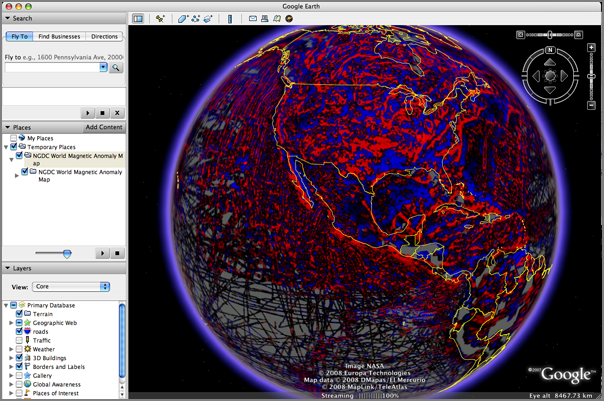
<br /><br />

<br /><br />

</div>
</div>

<div class="posted">
<br />Posted by <span class="item-creator">Kurt</span>
| <a class="link" href="2008-03.html#e2008-03-05T15_52_19.txt">Permalink</a>

<!-- <br /><a href="archives/2008-03-06T09_18_06.html#comments">Comments</a> -->
</div>
</div>
<div class="item">
<a id="e2008-03-05T15_46_43.txt" name="e2008-03-05T15_46_43.txt"></a>
<h2 class="date">03.05.2008 15:46</h2>
<div class="blogbody">
<h3 class="title">Coast Guard Cutter Healy to deploy</h3>
<div class="item-description">
<a
href="http://coastguardnews.com/coast-guard-cutter-healy-to-deploy/2008/03/05/">Coast
Guard Cutter Healy to deploy</a> [coastguardnews.com]
<pre>
SEATTLE - The nation's largest icebreaker, Coast Guard Cutter Healy,
departs Seattle Thursday to prepare for its Arctic West summer 2008
deployment that will have the cutter in the northern polar regions for
over six months.
.
During the deployment, Healy will travel more than 25,000 miles and
conduct more than 2,000 individual science evolutions in the course of
completing seven separate science missions. Healy will spend six weeks
between the second and third missions in Seattle conducting scheduled
maintenance and training.
...
</pre>
CCOM/JHC will be doing a mapping cruise on the Healy this summer.
</div>
</div>

<div class="posted">
<br />Posted by <span class="item-creator">Kurt</span>
| <a class="link" href="2008-03.html#e2008-03-05T15_46_43.txt">Permalink</a>

<!-- <br /><a href="archives/2008-03-05T15_52_19.html#comments">Comments</a> -->
</div>
</div>
<div class="item">
<a id="e2008-03-05T12_04_54.txt" name="e2008-03-05T12_04_54.txt"></a>
<h2 class="date">03.05.2008 12:04</h2>
<div class="blogbody">
<h3 class="title">uptime</h3>
<div class="item-description">
Dang!  Over 600 days of uptime.
<pre>
 09:18:31 up 606 days, 20:49, 10 users,  load average: 0.18, 0.54, 0.45
</pre>
</div>
</div>

<div class="posted">
<br />Posted by <span class="item-creator">Kurt</span>
| <a class="link" href="2008-03.html#e2008-03-05T12_04_54.txt">Permalink</a>

<!-- <br /><a href="archives/2008-03-05T15_46_43.html#comments">Comments</a> -->
</div>
</div>
<div class="item">
<a id="e2008-03-05T09_10_21.txt" name="e2008-03-05T09_10_21.txt"></a>
<h2 class="date">03.05.2008 09:10</h2>
<div class="blogbody">
<h3 class="title">IHO S-44 Standards for Hydrographic Surveys - Fifth Edition</h3>
<div class="item-description">
Thanks to Andy A. for forwarding this announcement.  I have a new
document at the top of my reading list: 
<pre>
The Fifth Edition of the IHO S-44 Standards for Hydrographic Surveys
has recently been approved by the IHO Member States and is attached
for your information.  It is also available from the IHO website
(http://www.iho.shom.fr) under "Publications, Download List, S-44".
</pre>
<br /><br />
<a href="http://www.iho.shom.fr/publicat/free/files/S-44_5E.pdf">S-44_5E.pdf</a>
<br /><br />
Also of note: A S-100 draft is out for comments, which are due August
2008.  I need to get through this one soon.
<br /><br />
<a href="http://www.iho.shom.fr/COMMITTEES/CHRIS/TSMAD/tsmadintro.htm#S-100">   S-100 - IHO Geospatial Standard for Hydrographic Data</a>
<br /><br />

</div>
</div>

<div class="posted">
<br />Posted by <span class="item-creator">Kurt</span>
| <a class="link" href="2008-03.html#e2008-03-05T09_10_21.txt">Permalink</a>

<!-- <br /><a href="archives/2008-03-05T12_04_54.html#comments">Comments</a> -->
</div>
</div>
<div class="item">
<a id="e2008-03-04T22_57_25.txt" name="e2008-03-04T22_57_25.txt"></a>
<h2 class="date">03.04.2008 22:57</h2>
<div class="blogbody">
<h3 class="title">Wicked image of a moth tounge by Jeff Riffell et al. on the cover of PNAS</h3>
<div class="item-description">
Go Jeff!  His killer image of a moth is on the cover of the
Proceedings of the National Academy of Sciences (PNAS) this month.
Last year, Jeff gave me a tour of the moth lab.  And I thought that my
research is intense.  Hawkmoths are cool!
<br /><br />
<b>Jeffrey A. Riffell</b>, Ruben Alarcon, Leif Abrell, Goggy Davidowitz,
Judith L. Bronstein, and John G. Hildebrand, <em>Behavioral
consequences of innate preferences and olfactory learning in
hawkmoth-flower interactions</em>
<br /><br />

<br /><br />
Cover image: Foraging hawkmoth. In southern Arizona, hawkmoths
(Manduca sexta) have an innate odor preference to obtain nectar from
jimsonweed (Datura wrightii) flowers. When jimsonweed is absent,
hawkmoths learn to feed from agave flowers (Agave palmeri).
<br /><br />
<a href="http://www.pnas.org/cgi/content/short/105/9/3404">PNAS Abstract</a>
<pre>
Spatiotemporal variability in floral resources can have ecological and
evolutionary consequences for both plants and the pollinators on which
they depend. Seldom, however, can patterns of flower abundance and
visitation in the field be linked with the behavioral mechanisms that
allow floral visitors to persist when a preferred resource is
scarce. To explore these mechanisms better, we examined factors
controlling floral preference in the hawkmoth Manduca sexta in the
semiarid grassland of Arizona. Here, hawkmoths forage primarily on
flowers of the bat-adapted agave, Agave palmeri, but shift to the
moth-adapted flowers of their larval host plant, Datura wrightii, when
these become abundant. Both plants emit similar concentrations of
floral odor, but scent composition, nectar, and flower reflectance are
distinct between the two species, and A. palmeri flowers provide six
times as much chemical energy as flowers of D. wrightii. Behavioral
experiments with both naive and experienced moths revealed that
hawkmoths learn to feed from agave flowers through olfactory
conditioning but readily switch to D. wrightii flowers, for which they
are the primary pollinator, based on an innate odor
preference. Behavioral flexibility and the olfactory contrast between
flowers permit the hawkmoths to persist within a dynamic environment,
while at the same time to function as the major pollinator of one
plant species.
</pre>
Disclosure: Jeff is married to my sister.
</div>
</div>

<div class="posted">
<br />Posted by <span class="item-creator">Kurt</span>
| <a class="link" href="2008-03.html#e2008-03-04T22_57_25.txt">Permalink</a>

<!-- <br /><a href="archives/2008-03-05T09_10_21.html#comments">Comments</a> -->
</div>
</div>
<div class="item">
<a id="e2008-03-04T21_50_19.txt" name="e2008-03-04T21_50_19.txt"></a>
<h2 class="date">03.04.2008 21:50</h2>
<div class="blogbody">
<h3 class="title">Using mdbtools to read MS Access Jet DB files from NOAA AWOIS</h3>
<div class="item-description">
The <a href="http://chartmaker.ncd.noaa.gov/hsd/hsd-3.html">NOAA Automated
Wreck and Obstruction Information System</a> looks like it has some
really useful information about objects that might hang up an
emergency response team.  The EarthNC KML is pretty cool, but I need
to get this data into PostGIS if I am going to use in in our tools.  I
got a bit of a surprise when I found that the online data files are MS
Access.  I'm primarily a Mac/Linux user and even though we have
Windows boxes all over the building, I'd like to get things automated
and working without running any proprietary systems.  Finding a
library that can read MS Access databases turned out to be tough.
I haven't directly worked with Access before.  Here is what I found in
the zip:
<pre>
% <b>strings sec1.mdb | head -2</b>
Standard Jet DB
gr@?
</pre>
Someone on IRC suggested that I use unixODBC.  That is great, but it
looks like unixODBC uses a library that is not compiled into fink.
Turns out that the library is <a
href="http://mdbtools.sourceforge.net/">mdbtools</a>.  This package
hasn't had a release in almost 4 years.  I failed horribly with
versions 0.5 and 0.6pre1.  I finally checked out the code from CVS and
made a snapshot.  I then had to get the autoconf/libtool/automake
business work.  I installed libtool2 (2.2-1), automake1.9 (1.8.6-3) and
autoconf (2.60-4) from fink.  That didn't work until I edited autogen.sh
to change libtool to glibtool to pick up the fink libtool.  Complicated
enough.  Finally after ./autogen.sh && ./configure 
--prefix=some-random-place, I had a working mdbtools.  Whew.
<br /><br />
Now for a little on using the program...
<br /><br />
Check out the database type:
<pre>
% <b>./mdb-ver sec1.mdb</b>
JET4
</pre>
What tables do we have?
<pre>
% <b>./mdb-tables sec1.mdb</b>
Section 1 
</pre>
Only one?  Time to see what is inside that table.
<pre>
% <b>./mdb-sql -H -p sec1.mdb</b>
1 =&gt; <b>describe table "Section 1"</b>
2 =&gt; <b>go</b>
RECRD   Long Integer    4
VESSLTERMS      Text    40
CHART   Text    16
AREA    Text    2
CARTOCODE       Text    8
SNDINGCODE      Text    6
DEPTH   Double  8
NATIVLAT        Text    22
NATIVLON        Text    24
LAT83   Text    22
LONG83  Text    24
LATDEC  Double  8
LONDEC  Double  8
NATIVDATUM      Text    4
CONVERT83       Text    2
GPACCURACY      Text    4
GPQUALITY       Text    12
GPSOURCE        Text    12
QUADRANT        Text    2
History Memo/Hyperlink  0      # What is this???
REFERENCE       Text    80
YEARSUNK        Text    8
SYSTEMNUM       Long Integer    4
23 Rows retrieved
</pre>
If we ask for a generic create statement, it looks pretty good.  There are lots of
issues to be solved.  For example, table names with spaces...
<pre>
% <b>./mdb-schema sec1.mdb</b>
CREATE TABLE Section 1
 (
        RECRD                   Long Integer, 
        VESSLTERMS              Text (40), 
        CHART                   Text (16), 
        AREA                    Text (2), 
        CARTOCODE               Text (8), 
        SNDINGCODE              Text (6), 
        DEPTH                   Double, 
        NATIVLAT                Text (22), 
        NATIVLON                Text (24), 
        LAT83                   Text (22), 
        LONG83                  Text (24), 
        LATDEC                  Double, 
        LONDEC                  Double, 
        NATIVDATUM              Text (4), 
        CONVERT83               Text (2), 
        GPACCURACY              Text (4), 
        GPQUALITY               Text (12), 
        GPSOURCE                Text (12), 
        QUADRANT                Text (2), 
        History                 Memo/Hyperlink (255), 
        REFERENCE               Text (80), 
        YEARSUNK                Text (8), 
        SYSTEMNUM               Long Integer
);
</pre>
The text dump/export is not really what I want.  Maybe the sql export will be better.
<pre>
% <b>./mdb-export -I sec1.mdb "Section 1" &gt; foo.sql</b>
INSERT INTO Section 1 (RECRD, VESSLTERMS, CHART, AREA, CARTOCODE, SNDINGCODE, 
DEPTH, NATIVLAT, NATIVLON, LAT83, LONG83, LATDEC, LONDEC, NATIVDATUM, CONVERT83, 
GPACCURACY, GPQUALITY, GPSOURCE, QUADRANT, History, REFERENCE, YEARSUNK, SYSTEMNUM) 
VALUES (2126,"VAN","13200","A","102",NULL,0,"42/26/24.00","070/40/16.00",
"42/26/24.35","070/40/14.15",42.4400972222222,70.6705972222222,"6","C","83",
"Low",NULL,"2","
 DESCRIPTION                                  
    24     NO.210; CARGO; SUNK 5/16/35; POSITION ACCURACY WITHIN 1 MILE             
    27     NO.143; FTR., REPORTED THRU ESF ANTI-SUBM. WARFARE UNIT","20",NULL,2044)
</pre>
Missing the ';' at the end of each insert.  It also does not do
anything to encode things like degree symbols.  Hmmm.  Much more to
do.
<br /><br />
The source: <a href="http://vislab-ccom.unh.edu/~schwehr/software/fink/mdbtools-0.6pre1-20080304.tar.bz2">mdbtools-0.6pre1-20080304.tar.bz2</a>
<br /><br />
P.S.  Dear Apple, why am I getting these errors from emacs all of a sudden?
<pre>
lib: sequence lost (0x11a0e > 0xeadf) in reply type 0x0!
lib: sequence lost (0x10000 > 0xeae0) in reply type 0x0!
lib: sequence lost (0x10000 > 0xeae8) in reply type 0x1!
Error: Couldn't find per display information
</pre>
I rebuilt emacs, but that only reduced the frequency of the problem.
Looks like restarting X11 did the trick.  What's up?
</div>
</div>

<div class="posted">
<br />Posted by <span class="item-creator">Kurt</span>
| <a class="link" href="2008-03.html#e2008-03-04T21_50_19.txt">Permalink</a>

<!-- <br /><a href="archives/2008-03-04T22_57_25.html#comments">Comments</a> -->
</div>
</div>
<div class="item">
<a id="e2008-03-04T11_42_32.txt" name="e2008-03-04T11_42_32.txt"></a>
<h2 class="date">03.04.2008 11:42</h2>
<div class="blogbody">
<h3 class="title">EarthNC makes a layer for NOAA AWOIS</h3>
<div class="item-description">
From <a href="http://www.gearthblog.com/blog/archives/2008/03/links_games_kml_data_and_more.html">Links: Games, KML, Data, and more</a> [Google Earth Blog]
<br /><br />
Using the NOAA <a href="http://chartmaker.ncd.noaa.gov/hsd/hsd-3.html">Automated Wreck and Obstruction Information System</a> (AWOIS)
<br /><br />
<a href="http://earthnc.com/kml/wrecks/EarthNC_NOAA_Wrecks.kml">EarthNC_NOAA_Wrecks.kml</a> [EarthNC]
<br /><br />
A wreck in the Stellwagen Bank National Marine Sanctuary (SBNMS):
<br /><br />

<br /><br />
A wreck in Portmouth Harbor, NH:
<br /><br />

</div>
</div>

<div class="posted">
<br />Posted by <span class="item-creator">Kurt</span>
| <a class="link" href="2008-03.html#e2008-03-04T11_42_32.txt">Permalink</a>

<!-- <br /><a href="archives/2008-03-04T21_50_19.html#comments">Comments</a> -->
</div>
</div>
<div class="item">
<a id="e2008-03-03T20_13_51.txt" name="e2008-03-03T20_13_51.txt"></a>
<h2 class="date">03.03.2008 20:13</h2>
<div class="blogbody">
<h3 class="title">Where was the SR162g AIS receiver tested?</h3>
<div class="item-description">
I just got another batch of AIS receivers.  This time I got a SR162g
with a GPS instead for the straight SR162 units that I have been
getting.  I was getting weird results from the unit.  I was expecting
to get the location for my office or 0,0, but instead I was getting
some other strange numbers.  The I realized that this is probably the
test facility for these devices.
<pre>
% <b>serial-logger -p /dev/tty.USA49W4b433P1.1  --uscg -s ccom-152-162g -v</b>
$AITXT,01,01,91,FREQ,2087,2088*57,rccom-152-162g,1204575527.29
!AIVDM,1,1,,A,152GeG@P00Js@cnHccGP0?wL06Q8,0*15,rccom-152-162g,1204575527.76
&,rccom-152-162g,1204575529.36
RX YACHT AIS Receiver v1.3,rccom-152-162g,1204575529.37
RECE FRQ        R1F1619750,rccom-152-162g,1204575529.38
RECE FRQ        R2F1620250,rccom-152-162g,1204575529.38
INT RATE        IED00,rccom-152-162g,1204575529.39
$GPRMC,001522.41,V,2232.3410,N,11404.0099,E,0.10,0.0,030108,2.0,W,N*00,rccom-152-162g,1204575529.66
!AIVDO,1,1,,,13tfD@?P018::16&lt;qIlP0?vd0000,0*05,rccom-152-162g,1204575529.67
$GPRMC,001522.41,V,2232.3410,N,11404.0099,E,0.10,0.0,030108,2.0,W,N*00,rccom-152-162g,1204575530.54
</pre>
When I decode the AIVDO (which is oddly easier for me than decoding the GPRMC), I get this:
<pre>
% <b>ais_msg_1.py -d '!AIVDO,1,1,,,13tfD@?P018::16&lt;qIlP0?vd0000,0*05,rccom-152-162g,1204575548.57'</b>
position:
        MessageID:          1
        RepeatIndicator:    0
        UserID:             265000000
        NavigationStatus:   15
        ROT:                -128
        SOG:                0.1
        PositionAccuracy:   0
        longitude:          114.066831667
        latitude:           22.5390166667
        COG:                0
        TrueHeading:        511
        TimeStamp:          22
        RegionalReserved:   0
        Spare:              0
        RAIM:               False
</pre>
I threw the location at Google Earth and got a building in China right
next to the border of Hong Kong.
<br /><br />

<br /><br />
It took quite a while, but the unit finally did lock up on the GPS signals.
<pre>
!AIVDO,1,1,,,13tfD@?P0EJs@jTHcc=4igvt0000,0*61,rccom-152-sr162g,1204583190.51
$GPRMC,222631.15,A,4308.1396,N,07056.4007,W,1.08,122.2,030308,15.0,W,A*34,rccom-152-sr162g,1204583191.5
</pre>
</div>
</div>

<div class="posted">
<br />Posted by <span class="item-creator">Kurt</span>
| <a class="link" href="2008-03.html#e2008-03-03T20_13_51.txt">Permalink</a>

<!-- <br /><a href="archives/2008-03-04T11_42_32.html#comments">Comments</a> -->
</div>
</div>
<div class="item">
<a id="e2008-03-03T18_40_31.txt" name="e2008-03-03T18_40_31.txt"></a>
<h2 class="date">03.03.2008 18:40</h2>
<div class="blogbody">
<h3 class="title">Adobe Flex Builder 3 Pro for Education</h3>
<div class="item-description">
If you are in an academic institution, Abode will give you a license
to Adobe Flex Builder 3 Pro for Education.  The app is based on
Eclipse.  Seems like Eclipse is popping up everywhere.
<br /><br />
<a href="http://www.flexregistration.com/">http://www.flexregistration.com/</a>
<br /><br />

</div>
</div>

<div class="posted">
<br />Posted by <span class="item-creator">Kurt</span>
| <a class="link" href="2008-03.html#e2008-03-03T18_40_31.txt">Permalink</a>

<!-- <br /><a href="archives/2008-03-03T20_13_51.html#comments">Comments</a> -->
</div>
</div>
<div class="item">
<a id="e2008-03-03T17_38_50.txt" name="e2008-03-03T17_38_50.txt"></a>
<h2 class="date">03.03.2008 17:38</h2>
<div class="blogbody">
<h3 class="title">Hats</h3>
<div class="item-description">
<a href="http://www.bspcn.com/2008/03/03/bringing-back-the-hat/">Bringing Back the Hat</a> [bspcn]
<pre>
Yet hats are due for a full resurgence. Hats are both functional and
stylish. They can cover a bad hair day, keep your head warm, and shade
your eyes from the sun. They can also be worn to cover a receding
hairline, which interestingly enough is why Frank Sinatra, an iconic
hat wearer, start wearing one in the first place. They give you touch
of class and sophistication, impart personality, and add an
interesting and unique accent to your outfits. And hats are a
sure-fire way to boost your confidence. A cool hat can quickly become
your signature piece and give you extra swagger.
</pre>

</div>
</div>

<div class="posted">
<br />Posted by <span class="item-creator">Kurt</span>
| <a class="link" href="2008-03.html#e2008-03-03T17_38_50.txt">Permalink</a>

<!-- <br /><a href="archives/2008-03-03T18_40_31.html#comments">Comments</a> -->
</div>
</div>
<div class="item">
<a id="e2008-03-03T13_51_58.txt" name="e2008-03-03T13_51_58.txt"></a>
<h2 class="date">03.03.2008 13:51</h2>
<div class="blogbody">
<h3 class="title">Cosco Busan payout</h3>
<div class="item-description">
<a href="http://www.marinelink.com/Story/ShowStory.aspx?StoryID=211083">Ship Owner to Pay $2m for SF Oil Spill</a>
<pre>
Agents for the owner of a cargo ship that dumped oil into San
Francisco Bay have agreed to pay $2 million to the city of San
Francisco, the AP reported Thousands of birds died, beaches closed and
the crabbing season was delayed after the 900-ft. Cosco Busan
sideswiped the Bay Bridge. The crash cut a gash in the hull, and
54,000 gallons of oil were spilled. The agreement was reached with
Hudson Marine Management Services of Pennsauken, N.J., acting on
behalf of the ship's Hong Kong-based owner, Regal Stone Ltd. Source:
AP</pre>
</div>
</div>

<div class="posted">
<br />Posted by <span class="item-creator">Kurt</span>
| <a class="link" href="2008-03.html#e2008-03-03T13_51_58.txt">Permalink</a>

<!-- <br /><a href="archives/2008-03-03T17_38_50.html#comments">Comments</a> -->
</div>
</div>
<div class="item">
<a id="e2008-03-03T12_01_01.txt" name="e2008-03-03T12_01_01.txt"></a>
<h2 class="date">03.03.2008 12:01</h2>
<div class="blogbody">
<h3 class="title">Class A AIS setup</h3>
<div class="item-description">
So I don't loose track of this again, here is the RM808 Class A AIS
unit setup on the R/V Coastal Suveyor back in 2006.  L3/Klein has been
kind enough to provide us with this unit that we use for research.
The RM808 is a Nauticast/Raytheon type unit.
<br /><br />

</div>
</div>

<div class="posted">
<br />Posted by <span class="item-creator">Kurt</span>
| <a class="link" href="2008-03.html#e2008-03-03T12_01_01.txt">Permalink</a>

<!-- <br /><a href="archives/2008-03-03T13_51_58.html#comments">Comments</a> -->
</div>
</div>
<div class="item">
<a id="e2008-03-03T10_08_15.txt" name="e2008-03-03T10_08_15.txt"></a>
<h2 class="date">03.03.2008 10:08</h2>
<div class="blogbody">
<h3 class="title">Arctic Ocean Seabed Rights</h3>
<div class="item-description">
<a href="http://jurist.law.pitt.edu/forumy/2008/03/arctic-ocean-seabed-rights-last-great.php">Arctic Ocean Seabed Rights: The Last Great Land Grab?</a> [jurist - Legal News and Research]
<pre>
Recent events suggest that the Arctic Ocean has the potential over
coming years to be at the centre of a modern version of the last great
land grab, except that on this occasion it will be the seabed that
will be up for claim and counterclaim. Russia's 2007 flag planting on
the North Pole seafloor, and recent comments by US government
scientists over the potential for a clash with Canada over the
seafloor north of Alaska illustrate why this issue is beginning to
attract serious attention. Fortunately, there are mechanisms under the
law of the sea to calm fears of an outbreak of tension over the polar
north, but this will create some challenges given the US position
towards the 1982 UN Convention on the Law of the Sea (LOSC).
...
</pre>
Related: <a href="http://www.hs.fi/english/article/New+models+sought+for+icebreaking+service/1135234415996">New models sought for icebreaking service</a>
<pre>
The Finnish Maritime Administration is preparing a statement for
introducing competition into icebreaking services.  The launch of
competition has been less than promising. The first competition in
2006 brought just one offer - the Finnish state shipping company
Finstaship, and the prices that it put forward had officials at the
Maritime Administration falling off their chairs.  What was supposed
to be a bid for tenders turned into a negotiation over prices, and now
a new solution is being sought.
...
</pre>
</div>
</div>

<div class="posted">
<br />Posted by <span class="item-creator">Kurt</span>
| <a class="link" href="2008-03.html#e2008-03-03T10_08_15.txt">Permalink</a>

<!-- <br /><a href="archives/2008-03-03T12_01_01.html#comments">Comments</a> -->
</div>
</div>
<div class="item">
<a id="e2008-03-03T09_41_31.txt" name="e2008-03-03T09_41_31.txt"></a>
<h2 class="date">03.03.2008 09:41</h2>
<div class="blogbody">
<h3 class="title">USCG and the Arctic</h3>
<div class="item-description">
<a href="http://www.cgblog.org/2008/02/uscg-arctic-and-future.html">The USCG, the Arctic, and the future</a> [cgblog]
<pre>
...
With a mix of the statements/article above and the Coast Guard's
involvement in the "Last Frontier" I have a theory of what we can
expect- The Coast Guard is going to play a huge part in the
international scene in the next few years. With an official Station in
the far north we will become the U.S.'s representatives in the battle
of who gets what/who protects what in the new transit area and mineral
rights. The expectation is that the ice will cease to exist by 2013 in
the transit areas of the Northwest Passage, and the means LOTS of
traffic- and Search and Rescue/LE to boot.
...
</pre>
and...
<br /><br />
<a href="http://opencrs.cdt.org/document/RL34391">RL34391: Coast Guard
Polar Icebreaker Modernization: Background, Issues, and Options for
Congress, February 26, 2008</a>
<pre>
<b>Summary:</b>
Of the Coast Guard's three polar icebreakers, two -- Polar Star and
Polar Sea -- have exceeded their intended 30-year service lives, and
Polar Star is not operational and has been caretaker status since July
1, 2006. The Coast Guard has begun initial studies on replacements for
the two ships. Under the Coast Guard's current schedule, the first
replacement ship might enter service in 8 to 10 years. A 2007 report
from the National Research Council (NRC) on the U.S. polar icebreaking
fleet states that "U.S. [polar] icebreaking capability is now at risk
of being unable to support national interests in the north and the
south." Congress, in the explanatory statement for the FY2008
Consolidated Appropriations Act (H.R. 2764/P.L. 110-161 of December
26, 2007), expressed concern about the Coast Guard's ability to meet
its polar operations mission requirements and directed the Coast Guard
to submit a comprehensive report on the issue. The Coast Guard
estimates that new replacement ships might cost $800 million to $925
million each in 2008 dollars, and that the alternative of extending
the service lives of Polar Sea and Polar Star for 25 years might cost
about $400 million per ship. Potential policy issues for Congress
regarding Coast Guard polar icebreaker modernization include the
numbers and capabilities of polar icebreakers the Coast Guard will
need in the future; whether to provide these icebreakers through
construction of new ships or service life extensions of older ships;
whether to accelerate the Coast Guard's current schedule for acquiring
replacement ships; whether new ships should be nuclear powered;
whether new ships should be funded in the Coast Guard budget or the
Department of Defense (DOD) budget; and whether, as an interim
measure, the Polar Star should be repaired and placed back into
service. Congress's options regarding Coast Guard polar icebreaker
modernization include but are not limited to the following: approving
the Coast Guard's current plan; holding hearings to solicit additional
information on the issue; directing the Coast Guard to include the
option of nuclear power in its studies of requirements for future
icebreakers; directing the Coast Guard to pursue a particular
acquisition strategy for icebreaker modernization; accelerating the
procurement of new icebreakers relative to the Coast Guard's current
plan; funding the procurement of new icebreakers in the DOD budget
rather than the Coast Guard budget; and directing the Coast Guard to
reactivate Polar Star. This report will be updated as events warrant.
</pre>
</div>
</div>

<div class="posted">
<br />Posted by <span class="item-creator">Kurt</span>
| <a class="link" href="2008-03.html#e2008-03-03T09_41_31.txt">Permalink</a>

<!-- <br /><a href="archives/2008-03-03T10_08_15.html#comments">Comments</a> -->
</div>
</div>
<div class="item">
<a id="e2008-03-03T09_02_33.txt" name="e2008-03-03T09_02_33.txt"></a>
<h2 class="date">03.03.2008 09:02</h2>
<div class="blogbody">
<h3 class="title">AIS Class B still not quite here in the US</h3>
<div class="item-description">
I was looking at the FCC web site over the weekend and did not see
anything about class B AIS.  An update from the RTCM:
<pre>
March has arrived, and the U.S. Federal Communications Commission has
still not completed the rulemaking which would allow certification of
Class B Automatic Identification Systems in the U.S.
.
The docket has been in "circulation" at the commissioners' level for
some time.  We have no reason to believe that there is any problem
with the rulemaking and AIS-B certification, except that not all of
the commissioners have signed off on it.  Normally, dockets on
circulation that have not been approved go on the agenda of the
monthly meeting of the Commission.  This is what we expected to happen
at the meeting the last week in February.  However, the Commission
decided to move its meeting from Washington to Harvard University for
the purpose of having a one-subject meeting on Broadband Network
Management Practices.
.
The next meeting of the Commission is scheduled for March 19, and once
again we would expect the rulemaking to be on the agenda for that
meeting if it has not been approved before then.
</pre>
</div>
</div>

<div class="posted">
<br />Posted by <span class="item-creator">Kurt</span>
| <a class="link" href="2008-03.html#e2008-03-03T09_02_33.txt">Permalink</a>

<!-- <br /><a href="archives/2008-03-03T09_41_31.html#comments">Comments</a> -->
</div>
</div>
<div class="item">
<a id="e2008-03-02T17_03_48.txt" name="e2008-03-02T17_03_48.txt"></a>
<h2 class="date">03.02.2008 17:03</h2>
<div class="blogbody">
<h3 class="title">CCOM wikipedia</h3>
<div class="item-description">
I've taken the first step in creating a <a
href="http://en.wikipedia.org/wiki/Center_for_Coastal_%26_Ocean_Mapping">Wikipedia
page for CCOM</a>.  Now it is up to others to add to and modify the
page.  There is lots more that can be added.  I've just done a quick
overview, the geographic location, and a list of some of the research topics.
<br /><br />

</div>
</div>

<div class="posted">
<br />Posted by <span class="item-creator">Kurt</span>
| <a class="link" href="2008-03.html#e2008-03-02T17_03_48.txt">Permalink</a>

<!-- <br /><a href="archives/2008-03-03T09_02_33.html#comments">Comments</a> -->
</div>
</div>
<div class="item">
<a id="e2008-03-02T14_45_43.txt" name="e2008-03-02T14_45_43.txt"></a>
<h2 class="date">03.02.2008 14:45</h2>
<div class="blogbody">
<h3 class="title">Google Earth class for Bathymetric Spatial Analysis</h3>
<div class="item-description">
Last week I taught a lecture for one of the classes in CCOM.  I've
posted the presentation powerpoint up on the web for anyone who wants
it.  It is not the most polished of presentations and there is very
little explanation in the comment section.  This is basically a
condensed version of last falls series of lectures.  Some of the
students have got me excited about using EndNote to put references
into Google Earth KML.  If we use something like either the wikipedia
place markup or <a
href="http://en.wikipedia.org/wiki/Well-known_text">WKT</a>
[wikipedia] into a particular field, it should not be hard to
automatically create a KML from a reference library.  For example: <a
href="http://en.wikipedia.org/wiki/Great_Bay_(New_Hampshire)">Great
Bay (New Hampshire)</a>
<pre>
{{coord|43|04|01|N|70|52|07|W|display=title}}</pre>
<br /><br />
<a href="http://vislab-ccom.unh.edu/~schwehr/Classes/2008/200802-ESCI896/">200802-ESCI896</a>
<br /><br />

</div>
</div>

<div class="posted">
<br />Posted by <span class="item-creator">Kurt</span>
| <a class="link" href="2008-03.html#e2008-03-02T14_45_43.txt">Permalink</a>

<!-- <br /><a href="archives/2008-03-02T17_03_48.html#comments">Comments</a> -->
</div>
</div>
<div class="item">
<a id="e2008-03-02T12_02_27.txt" name="e2008-03-02T12_02_27.txt"></a>
<h2 class="date">03.02.2008 12:02</h2>
<div class="blogbody">
<h3 class="title">Ubuntu running on the Mac with vmware fusion</h3>
<div class="item-description">
I'm finally catching up on an item that I've had on my to do list for
about 4 months now.  I got <a href="http://www.vmware.com/">vmware</a>
fusion working on my Mac OSX 10.5 intel laptop, at least for Ubuntu.
I downloaded the <a
href="http://www.vmware.com/appliances/directory/1068">Ubuntu 7.10
(Gutsy Gibbon) Desktop - English</a> and have it booted and updating.
This will let me work on creating debian .deb packages without having
to remote ssh to one of my datalogging boxes.  I was able to do
"apt-get update;apt-get upgrade" and the virtual machine is updating
itself.  Note to self for the future: when choosing a laptop hard
disk, pick the slower disk with more space.  Portable attached storage
is not much fun.
<br /><br />
I am not sure what was wrong when I first tried vmware fusion in
Nov/Dec, but then I could not get anything to work.  Today, when I
tried damn small linux and ubuntu, they both worked great.  And I'm
back to having <a href="http://azureus.sourceforge.net/">Azureus</a>
installed for bit torrent downloading of images.  Hurry for bit
torrent.
<br /><br />

</div>
</div>

<div class="posted">
<br />Posted by <span class="item-creator">Kurt</span>
| <a class="link" href="2008-03.html#e2008-03-02T12_02_27.txt">Permalink</a>

<!-- <br /><a href="archives/2008-03-02T14_45_43.html#comments">Comments</a> -->
</div>
</div>
<div class="item">
<a id="e2008-03-01T16_53_21.txt" name="e2008-03-01T16_53_21.txt"></a>
<h2 class="date">03.01.2008 16:53</h2>
<div class="blogbody">
<h3 class="title">Working towards creating debs</h3>
<div class="item-description">
I'm working through some notes and man pages on how to create debs on
Ubuntu.  I indirectly create debs on the Mac all the time with fink,
but I've always ignored what goes on under the hood.  Working with the
info files and the documentation on <a
href="http://finkproject.org/">finkproject.org</a> has been fairly
easy for me.  Creating a Ubuntu deb is a little less obvious.  If you
know of a really good tutorial/howto for creating debs with Ubuntu
7.10, please let me know.  I've been playing with the <a
href="http://women.debian.org/wiki/English/PackagingTutorial">Packaging
Tutorial</a> from Debian, but it is a bit out of date or there may be
differences between Debian and Ubuntu.
<br /><br />
I'd really like to have debs for all that I need for one of my
datalogging boxes.  I've got 2 remote boxes deployed around
Portsmouth/Great Bay and a third likely to go in soon up near <a
href="http://www.mainemaritime.edu/">Maine Maritime</a>.
<pre>
sudo apt-get update 
sudo apt-get upgrade
sudo apt-get install build-essential devscripts dh-make
export DEBEMAIL="schwehr _at_ ccom unh edu"
export DEBFULLNAME="Kurt Schwehr"
tar xf wmforkplop-0.9.3.tar.gz
cd wmforkplop-0.9.3
dh_make -f ../wmforkplop-0.9.3.tar.gz 
cd debian
</pre>
My debian/control file:
<pre>
Source: wmforkplop
Section: x11
Priority: extra
Maintainer: Kurt Schwehr &lt;schwehr _at_ ccom unh edu&gt;
Build-Depends: debhelper (&gt;= 5), autotools-dev
Standards-Version: 3.7.2
Package: wmforkplop
Architecture: any
Depends: ${shlibs:Depends}, ${misc:Depends}
Description: &lt;insert up to 60 chars description&gt;
 &lt;insert long description, indented with spaces&gt;
</pre>
The control file looks a lot like the fink info files that I am
familiar with.
<br /><br />
Then going back to the mac with fink, I'm learning more
debian package commands:
<pre>
apt-cache show tilecache-py25
Package: tilecache-py25
Priority: optional
Section: web
Installed-Size: 388
Maintainer: Kurt Schwehr &lt;goatbar _at_ users sourceforge net&gt;
Architecture: darwin-i386
Source: tilecache-py25
Version: 2.01-1
Depends: python25, darwin (&gt;= 9-1)
Filename: dists/local/main/binary-darwin-i386/web/tilecache-py25_2.01-1_darwin-i386.deb
Size: 70092
MD5sum: 78355410ea485af78bd6e3bb691e9d58
Description: WMS-C tiling client
 TileCache is an implementation of a WMS-C (about) compliant server
 made available under the BSD license by MetaCarta.
 .
 TileCache provides a Python-based WMS/TMS server, with pluggable
 caching mechanisms and rendering backends. In the simplest use case,
 TileCache requires only write access to a disk, the ability to run
 Python CGI scripts, and a WMS you want to be cached. With these
 resources, you can create your own local disk-based cache of any WMS
 server, and use the result in any WMS-C supporting client, like
 OpenLayers, or any TMS supporting client, like OpenLayers and
 worldKit.
 .
 Web site: http://tilecache.org/
 .
 Maintainer: Kurt Schwehr &lt;goatbar _at_ users sourceforge net&gt;
BuildDependsOnly: Undefined
</pre>
</div>
</div>

<div class="posted">
<br />Posted by <span class="item-creator">Kurt</span>
| <a class="link" href="2008-03.html#e2008-03-01T16_53_21.txt">Permalink</a>

<!-- <br /><a href="archives/2008-03-02T12_02_27.html#comments">Comments</a> -->
</div>
</div>
<div class="item">
<a id="e2008-03-01T08_12_22.txt" name="e2008-03-01T08_12_22.txt"></a>
<h2 class="date">03.01.2008 08:12</h2>
<div class="blogbody">
<h3 class="title">AUV (Navy calls them UUVs) for mine warefare</h3>
<div class="item-description">
From Jane's:
<pre>
<b>Clearing the way: UUVs evolve to meet front-line MCM requirements</b>
It is now five years since the first recognised use of unmanned
underwater vehicles (UUVs) as part of a live mine countermeasures
(MCM) operation. That milestone occurred in March 2003, when US Navy
mine warfare elements deployed as part of Operation 'Iraqi Freedom'
took the Hydroid REMUS 100 system into the warm, shallow waters of the
Northern Arabian Gulf and used its sidescan sonar to systematically
map the approaches into the port of Umm Qasr </pre>
and
<pre>
<b>Sonardyne's Sentinel works its magic with US Navy</b>
Sonardyne's Sentinel sonar head has been selected by US Naval Sea
Systems Command (NAVSEA) for its Integrated Swimmer Defense
System. The UK-based manufacturer has also secured a contract to test
and integrate the intruder detection system as part of the US Navy's
expeditionary warfare requirement.</pre>
</div>
</div>

<div class="posted">
<br />Posted by <span class="item-creator">Kurt</span>
| <a class="link" href="2008-03.html#e2008-03-01T08_12_22.txt">Permalink</a>

<!-- <br /><a href="archives/2008-03-01T16_53_21.html#comments">Comments</a> -->
</div>
</div>
<div class="item">
<a id="e2008-03-01T07_57_29.txt" name="e2008-03-01T07_57_29.txt"></a>
<h2 class="date">03.01.2008 07:57</h2>
<div class="blogbody">
<h3 class="title">CCOM Bowling</h3>
<div class="item-description">
Monica, the fearless organizer:
<br /><br />

<br /><br />
A crowd shot that doesn't do justice to the turnout:
<br /><br />

</div>
</div>

<div class="posted">
<br />Posted by <span class="item-creator">Kurt</span>
| <a class="link" href="2008-03.html#e2008-03-01T07_57_29.txt">Permalink</a>

<!-- <br /><a href="archives/2008-03-01T08_12_22.html#comments">Comments</a> -->
</div>
</div>
</div>

</div>

<div id="links">

<div class="calendar">
<table border="0" cellspacing="4" cellpadding="0" summary="Calendar with links to days with entries">
<caption class="calendarhead">March 2008</caption>
<tr>
<th align="center"><span class="calendarday">Su</span></th>
<th align="center"><span class="calendarday">Mo</span></th>
<th align="center"><span class="calendarday">Tu</span></th>
<th align="center"><span class="calendarday">We</span></th>
<th align="center"><span class="calendarday">Th</span></th>
<th align="center"><span class="calendarday">Fr</span></th>
<th align="center"><span class="calendarday">Sa</span></th>
</tr>
<tr>
<td align="center"></td> <td align="center"></td> <td align="center"></td> <td align="center"></td> <td align="center"></td> <td align="center"></td>  
<td align="center"><span class="calendar"><a href="2008-03.html#e2008-03-01T16_53_21.txt">1</a></span></td>
</tr>
<tr>
             
<td align="center"><span class="calendar"><a href="2008-03.html#e2008-03-02T17_03_48.txt">2</a></span></td>
<td align="center"><span class="calendar"><a href="2008-03.html#e2008-03-03T20_13_51.txt">3</a></span></td>
<td align="center"><span class="calendar"><a href="2008-03.html#e2008-03-04T22_57_25.txt">4</a></span></td>
<td align="center"><span class="calendar"><a href="2008-03.html#e2008-03-05T15_52_19.txt">5</a></span></td>
<td align="center"><span class="calendar"><a href="2008-03.html#e2008-03-06T19_46_44.txt">6</a></span></td>
<td align="center"><span class="calendar"><a href="2008-03.html#e2008-03-07T15_29_13.txt">7</a></span></td>
<td align="center"><span class="calendar"><a href="2008-03.html#e2008-03-08T09_39_38.txt">8</a></span></td>
</tr>
<tr>
       
<td align="center"><span class="calendar"><a href="2008-03.html#e2008-03-09T18_02_38.txt">9</a></span></td>
<td align="center"><span class="calendar"><a href="2008-03.html#e2008-03-10T18_45_23.txt">10</a></span></td>
<td align="center"><span class="calendar"><a href="2008-03.html#e2008-03-11T09_58_24.txt">11</a></span></td>
<td align="center"><span class="calendar"><a href="2008-03.html#e2008-03-12T19_23_37.txt">12</a></span></td>
<td align="center"><span class="calendar"><a href="2008-03.html#e2008-03-13T17_15_12.txt">13</a></span></td>
<td align="center"><span class="calendar"><a href="2008-03.html#e2008-03-14T14_00_02.txt">14</a></span></td>
<td align="center"><span class="calendar">15</span></td>
</tr>
<tr>
      
<td align="center"><span class="calendar">16</span></td>
<td align="center"><span class="calendar"><a href="2008-03.html#e2008-03-17T19_50_10.txt">17</a></span></td>
<td align="center"><span class="calendar"><a href="2008-03.html#e2008-03-18T21_05_35.txt">18</a></span></td>
<td align="center"><span class="calendar"><a href="2008-03.html#e2008-03-19T09_12_22.txt">19</a></span></td>
<td align="center"><span class="calendar"><a href="2008-03.html#e2008-03-20T14_46_45.txt">20</a></span></td>
<td align="center"><span class="calendar">21</span></td>
<td align="center"><span class="calendar">22</span></td>
</tr>
<tr>
      
<td align="center"><span class="calendar">23</span></td>
<td align="center"><span class="calendar">24</span></td>
<td align="center"><span class="calendar"><a href="2008-03.html#e2008-03-25T09_52_01.txt">25</a></span></td>
<td align="center"><span class="calendar"><a href="2008-03.html#e2008-03-26T20_17_48.txt">26</a></span></td>
<td align="center"><span class="calendar"><a href="2008-03.html#e2008-03-27T10_17_04.txt">27</a></span></td>
<td align="center"><span class="calendar"><a href="2008-03.html#e2008-03-28T07_17_22.txt">28</a></span></td>
<td align="center"><span class="calendar">29</span></td>
</tr>
<tr>
 
<td align="center"><span class="calendar"><a href="2008-03.html#e2008-03-30T20_03_04.txt">30</a></span></td>
<td align="center"><span class="calendar">31</span></td>
</tr>
</table>
</div>

</div>

<br clear="all" />

</body>
</html>
